Good News for People of All Nations
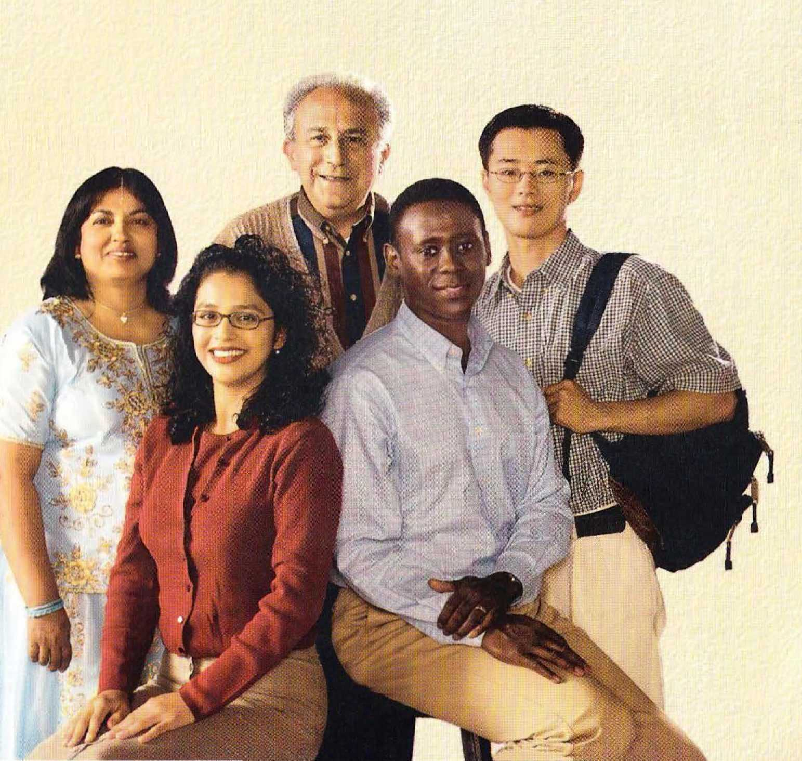,r
I
i
© 2004
WATCH TOWER BIBLE AND TRACT SOCIETY OF PENNSYLVANIA
All Rights Reserved
Publishers
WATCHTOWER BIBLE AND TRACT SOCIETY OF NEW YORK, INC.
Brooklyn, New York, U.S.A.
Good News for People of All Nations English (np-E)
Made in the United States of America
How to Help Those Who Speak Another Language
This booklet is designed to help you share the good news with those who speak a language that you do not understand. If you meet such individuals, please follow these three steps:
(1) Find out the householder’s language. Then consult the Table of Contents, and open the booklet to the appropriate page. Next, point to the sentence in bold type at the top of the page, which asks the householder to read the printed message.
(2) After the householder reads the message, offer him either the Require brochure or another publication in his language. If you do not have one, point to the sentence highlighted in gray, which says that you will bring a publication in his language. Then point to the expression “my name” (printed in bold type followed by *) in the last paragraph, and say your name clearly. Next, point to the expression “your name” (printed in bold type followed by #), and wait for a response. Make the return visit as soon as possible.
(3) Fill out a Please Follow Up (S-43) form, and give it to the secretary of your congregation. (Use this form also when you meet a person who is deaf.) The secretary will promptly forward the form to the appropriate congregation or group.
Put Good News for People of All Nations to good use. Carry it with you. By using this booklet, you will be helping people “out of all the languages of the nations” to hear the lifesaving truth from God’s Word. —Zechariah 8:23; Matthew 24:14.
Armenian, East (REA) .... 10
Azerbaijani (Roman script) (AJR)
Bassa (Cameroon) (BS) ... 14
Kurmanji Kurdish (Roman
Punjabi (Gurmukhi script) (PJ)
Lees asseblief hierdie boodskap
Ek is baie bly om jou te ontmoet. Al praat ek en jy nie dieselfde taal nie, stem jy sekerlik met my saam dat die lewe vol probleme is. Daarom wil ek jou ’n be-langrike vraag vra: Wil jy graag in ’n wereld lewe waar daar geen haat, swaarkry, siekte en selfs dood meer is nie?
Jy dink dalk: ‘Natuurlik, maar is dit moontlik?’ Ja, dit is! Die almagtige God, Jehovah, het self belowe dat by binnekort hierdie toestande gaan teweeg-bring. Kyk wat se die Bybel oor wat God vir die mensdom gaan doen: “Hy sal elke traan van hulle oe afvee, en die dood sal daar nie meer wees nie, en ook verdriet en angsgeroep en pyn sal daar nie meer wees nie. Die vorige dinge het verbygegaan.”—Openbaring 21:3, 4.
Dink net hoe gelukkig die lewe sal wees wanneer daardie woorde bewaarheid word! Maar hoe kan Jy sorg dat jy en jou gesin hierdie beloofde toekoms geniet? Jy sal die antwoord vind in die Bybellektuur wat ons uitgee. Ek sal met graagte vir jou ’n publika-sie in iou eie taal kry en dit vir iou bring.
Ek is een van Jehovah se Getuies. Ons help men-se om die Bybel te verstaan. Ek sal vir jou se wat my naam* is, en ek wil ook graag weet wat jou naam# is. Gee asseblief die boekie vir my terug sodat ander dit ook kan lees. Baie dankie.A
A Op die Internet (www.watchtower.org) sal jy meer inligting in jou eie taal kry.
AFRIKAANS 5
Jam shume i kenaqur qe ju takoj. Ndonese nuk flasim te njejten gjuhe, pa dyshim qe te dy e pranoj-me se jeta eshte e mbushur me probleme. Prandaj, dua t’ju bej nje pyetje te rendesishme: A do te donit te jetonit ne nje kohe kur te mos kete me urrejtje, probleme, semundje e madje as vdekje?
Ndoshta ju po mendoni: ‘Patjeter qe do te doja, por a eshte e mundur kjo?’ Po, eshte e mundur! Vete Pe-rendia i plotfuqishem, Jehovai, ka premtuar se se shpejti do te sjelle kushte te tilla. Ja gfare thote Bible se do te beje Perendia per nJ erezimin: «Ai do te thaje Qdo lot nga syte e tyre the vdekj e nuk do te kete me, as vajtim, as klithme, as dhembje nuk do te kete me. Gjerat e meparshme kane kaluar.»—Zbulesa 21:3, 4.
Mendoni sa e lumtur do te jete jeta kur te behen realitet keto fjale! Por, si mund te siguroheni qe ju the familja juaj te keni kete te ardhme qe eshte premtuar? Pergjigjen do ta gjeni ne literaturen bi-blike qe botojme. Me kenaqesi do te gjej nje botim per iu ne giuhen tuai the do t’iua siell. A <Z Cl) wJ ej
' ' . ■ ■ ■ • . . , • ■> •• ■ . . . . ... ... • .. . . . ...
Une jam Deshmitar i Jehovait. Ne i ndihmojme nje-
rezit qe te kuptojne Biblen. Dua t’ju them emrin tim* e gjithashtu do te me pelqente te dija e: lutem, ma ktheni perseri kete broshure qe ta lexojne edhe te tjere. Shume faleminderit?
rin tuaj#. Ju
A Ne Internet (www.watchtower.org) do te gjeni me shume in-formacione ne gjuhen tuaj.
MhP filrt
Mm## '(1a°?a« f^f” Mb, am# M°iaa mf af° X&(D# (ff°lC PtT’A >©• (LAA M£a'Lha7av hCfiarf AA ifif M£ flmfW £fi M^A:- TA^r aH# AAff #C£f f# a^&TCa# °iM° ®-flT wfC RAfiOtv?
W fl AAffl-T g,V tan &#W?' ■flAcD’ ?no- Zlfttw Wlr AJ/"> P^A »C >®*» 1>A-1 #& hf'Ml PlPiCD- z<h? Rtf} MRa'L?RQal ^Cf >A 7-fliAu AF°An AA®-AXf A^SO? Mflffl-'i >7C a#oMh# MW
MA:- ‘‘MaSpJ■'i?z, U-A- ?-(1AAt mtm hM°l^V
(d%.v hwwn ww0 tun mg,#' a&r hM°i %V (D^u f’+M”©- /^C°I# AAffhAT«”-
21:3, 4
A?°An PAma> ZU 1-M- ^9,‘^.cd-'} (Vi5? ^a)# #"-} ?UA Ah£Af Mgt'Lin £h(H-! ZlM M% &V ttl# XC fl$pF° (ft- (L-Z-A'tl?’ f’(lZir£ a°if} f'T.fA-=f MR,# ‘idf?
AH.U T£<fe a”AA f^ZAzn- (l^’XTh'P *KW) A0 ftavivi# Rsh-G# AA-T:: (lAft?’ m# f-Z-HpE »<h-^ n<n>rt}A?’^ £h M?A«
hi p^zhT FV^nc v5?!! h? fR^r ff'ne# o»s?zh¥
MP# PM.-} ny°* fhCft
(L7O/4Z? £ft £A*rA» RUT: ©’Ahh^ AA>A”f AP’f f tfi^h hAF'Tn+F'W hnnsp n-nA>-M ^©jaa-a^.-: n<nF° h©>A °?<7AU-::ZX
A ahWCh# (www.watchtower.org) (lAh?> ■t-gct.a16
.www.watch tower. org
IThp uiju hui*iiq.]iupii.iip mpuijii iun]ip liph t Jiti&Ii hiu-liuip: (d'thi hnjh jhqnih ^hhp Juoulip, piujg uililiiuulpufr IjB hiuiiui(iuijh]i,hp pt thuihpB }uhq]iphhpni[ ihgnih t: Oiuinji fniqhii fthqji Ijuiphinp huipgmii lip hiupghlq. ^ip ijiuiijiui-pffp uiiqp]q druiluitiuitli lip litg, hpp uiqhiu uiintqnipjnfa, hhqnipjiih, hJiiuihqnipJiLh hi imjlijiuli liiuh iqjimli ^pp tuiii:
R'hphiu putp. ‘U<U2n'i2ul IjB ^uiijiuipjiii, piujg uiujilpu tiuph]Jip t’: Ujn': Uiihhuilpiq tkuinniuidrp' Uhni[iii }unuinui-guift t pt 2nimnLL uijutqliuji tlJiduilihhp uiJunli phpt: ITuipp-lpiiphuifa. ]i tnquiuin Uuinntdnj phtqjip piutihpm.h. iiiuu]ih, U»uinniiu&ui2nilqp hhinhihui^p t’Uut- uiUntig ui^phptt1 PnlnP uipgmliplilipp uiJimli uppt hi ui'l tiuih iq]i-in}1 ^piiuij: unig hi n'^ uipuipuilj bi n'^ guii tqjiinli pp puj uiulit jhinnj, x^uiuh qji uinuigniuiti piuhtipp uihguifa”: —SuijintuiipliLii 21:3, 4
'Huih Up hphLiulpiijhgtp pt thmtipp nppiu^ti hpgiufijili uQiui]i PH.U1J, hpp uiju Jnouphpp tuimuipnijih: Uiulpujii JfU^uitu tnhuip ijuiniuh pliuq np qmp m hhp ptunuiUJi-pp uiyu Junumiugkuq luiqiuqiuii iqjim]i i[uijtqtp: 'Tliuintuu-]niutip u]}iin]i qiniitp lihp hpuiinuipuil|ui^ untpp qpiujjiti qpmtmimip]iiAi<LihpiiL‘Li iit2: ^hp ]hqnuii[
qpm tmUnipjaifaiip phptq fthqjr.
bu Uhnijuijli hii: ITuipipig t’oqiitilip np Uuin-
nLuifriu^nili^p huiuthuih: UAmifau* dhq}i uQiin]i Jniuighhii, hi UB iliuiijiuipliii Ahp uifamfap# qjnnhuq: ^uidhgtp mju qppnjllB litid-ji i^hpuiqiuphiih^, npiqtuqli mp]i2hhp uq Ip1" phhiuh quijh IpupipiiU tJuim 2hnphuilpu]_ hii:A
△ 9hp jhqninq junlqhuq mhqhlinip]iiiiiihp uijnnji qmiitp liuiguifagjiii ilpuij (www.watchtower.org):
ljuipipugti£, JuGiyphU, uiju pupp
t?u mpiuju hit Ghq fihin duiGnpvuGuqm fituGtup: (^hiqhui hu h rprnp %hGp JumimG ityhGmiG {lzqi/m/r uuiliuqG, uiGpmpin, GhquiGfig jmpiuptuG^mpp IffiiuGiu&uqGiIJi uqG jipnqmpiiuG Ghui, np Ghpl/iuj/iu IpvuGpp [[i t piuqmG ]uGp]ipGhpm[: U,ju uinmrfm[ hu LjgiuGljiuGuijfi Ghq Gfi punn Ipjuphnp fiuipg inuq. «bmqhGui-tfi'p luiqphi uiiGutfiufi duiGuiGuiliGhpmGf hpp uijihu ifiGJi n'± pnGmpjmG, uiiuniuiqiuGp, Gfu[iuGr].mpjmG h n'± h[ GnuGfiulj ifiufi»:
f^hphu pmp Ghp ifuipmif uiuhp. «bGuipl/h IpnqhGiujJi, pvujg Gfi^ph rpu GGuipuii[np h»‘ Lljn', GGuipuH[np h: bGpp' UiGhGuilpii-pnq U>uint[iub bGni[uiG t funuintughi, up hplfp}] i[piu GGiuG upuphuGGhp ljuinhqdi[hG: UiUintluidui^G^mG ]uiiui[mG h uijG Giu-u}iGf ph }1G± t Udiini[iud uiGhim GuippljmpiuiG fiiuifuip. <<^1^21; UiUinmiub prqnp uiptnuiumpp GnpuiGg ui^phpfigp. hi GuiGG uq[hiu
lpG}iit uniq, hi luquiqiul/. hi guu uighiu [pGji[f npni/-Ghmhi uinui2pGGhpG uiGgtuG» (dwiinGmpjnG 21:3, 4):
ITfiiujG upuinlihpiugpbp' nppui^G hp2uiGfili l/ifiGfi IpiuGpp, hpp uiju funuphpG fipiul/uiGnipjmG rpunGuiG: LkjGmGuiGphpG, fiG^iqh^u lpupm[ hp Guiilnqiliuh ipGhi, np pmp Ghp pGtnuiG]ip]i Ghm GuiufiG IflluipnquiGiup i[uiihihi ]unuinuigi[iud uiiquiqiujli uiju opGGmpjmG-Ghpp: ^uimuiujuuiGp Ijuipnq hp quiGh[ iuuini[ui^iU2G^ivuG qpuilpu-GnippuG Gh2f upp Gpuimuipuilii[mG t Ghp lpw[G]ig: nipuiju IfifiGhG &hnp phphi nplit: Gpiumuipiul^nipjmG Ghp Gui/pkG/i ihqi[nil h ph-phi dhq:
bu bfim[uij]i i[liui hit: IThGp oqGmG hGp GuipiilpuGg GuiulpuGui-pu Lkumi[vudiu2^iG^p: bu LiGuijuiGhG Ghq JiG uiGmGp*. fiGG GiuGiup GiuGhifi 1/ifiGhp fiGiuGuii Guih &hp uiGmGp#: hJGppmif hG, uiju qppnijlip i[hpiuqiupdphp fiGG, upujhuqli mpfeGhpG t[ GGtuptui[n-pmpjmG mGhGuiG iujG l/uippiuim: Guim 2GnpGtuljuiimpimG:A
" *
A IThp GiuuhG rpnp cui/hj/i 2uun inhiihljmpimGGhp 1/quiGhp Ghp {hqi/ni/' bG-inhpGhinmii (www.watchtower.org)’
JctlA AOio>.5xJ J
I
\jxOxjlA ^3jx2 ^2 \^o2 .*paox23p \->xpx £xb->x23 £23^
S\OxjU3 ^dx JpoXjxS \oa<-S jAp t^.xSoa ^£90°^ ^x6±3233 \_>x6x ?xJl2323 <£<7l2o ^O2J fa .^□OOp ^ip dlAx^>AS0
AOxZ £323$ 6X3 JxjSsA ^6 ^\x ^3 Oxsip : JxJ-bil fab03 pA »paO3ip ^^oZ ?£X6ip <2noX3xbX J*ocl jA ^JpX op ^□jxZp
9 S4oSb
‘^dlAk/Zsjxoal^p fal <fa^fa \d^xJ5pjss^>o £Soo^
□23 £1O?AS^3? ClAx^ApO-d 013^23 ^OOClx (A^f(xiO fafa ! ClAx £□4623 Siixsp ^.□3-Jo ocl cl Ax J cl Z .&6jAx2 jApcl 6jU Jx^xip ^p 2sXop <A^ fax) ^0“ :£i32-tfX3 fa ?■? fa^i? ci Ax \A^o :^jx6xi3p fa) fa> -??9^p £?<ti jA S4oSbo :c>JxX
£jxA\— “. *p523X J'^09^ ^AoXp C3233^ ’?99^p ?O<T1 ^A □□□
.4 <3
'.xA±3X fa? ^■>9J* £xOCl O2J SlOxjU fa)& fa&fa*
I z
Sp£\xs2o ULSol^fiSjU *p^p23X ^d^x^Ao fa <4^2$ tdto3 !^oi □23 9px^App jAoi fa fa *p ^<-SO£>23ip 323 tpaolS^Aa \^p2o
□23 .\jxOx j3ip^O2J ^?J*2p S^Xxp 0^\J6o^*P^xj^2xAo
Clx^xSoA *O23O3£A jJiA o£ P^lkip 6JxA Jjxp^2tSoA
<,i ' ” * * V - / * ,
•ASH&iS-a
z?h2 ::-r^i>.s.- ■■■■;'■
ZxOSoiAi 22£j2-A <-x>5xCl 223 .2o6ulx2 2c3c1x£ \->x6x J>x2 \ - I » I ll 1 > v ❖•'<•■ I • \l I
oxOx^Oj^Sd ^9^02 < ^SoXA ispAoA^xx-kp^O p23 . S4pjxA ^<\d JJO^J^A ^□2p3p ^6^oA^OJ2>23 ^2 .#*^^O&XA /ZsAAxA
\fab fa^Jbb .dAkx6J3lp faojb
^paoiLS o^ ;=l34 aa (www.watchtower.org) <^2p£MpA
II
Sizi gormaya qox §adam. Farqli dillarda dani§saq da, §ubhasiz, har ikimiz razila§acagiq ki, hayat problem-larla doludur. Bu sababdan siza bela bir vacib sual ver-mak istardim: Siz nifratin, ehtiyacm, xastaliyin va hatta olumun movcud olmayacagi bir dovrda ya§amaq istar-dinizmi?
Siz du§una bilarsiniz: “Olbatta istardim! Amma bu mumkundurmu?” Bali, mumkundur! Har §eya Qadir olan Yehova Allah Ozu va’d edir ki, tezlikla bu cur §a-rait yaradacaq. Muqaddas Kitabda Allahin insanlar uQun edacayi i§lar haqqmda deyilir: ‘Allah onlann goz-larindan butun ya§lan silacakdir. Artiq oltim movcud olmayacaq; artiq na kadar, na faryad, na da agn olacaq-dir, Qunki awalki §eylar keqib getdi” (Vahy 21:3, 4).
Bu sozlarin hayata keqacayi zaman hayatm neca da gozal olacagim tasawur edin! Bas sizin va ailanizin Allahin va’d etdiyi bu gozal §araitda ya§aya bilmaniz uqiin, siz na etmalisiniz? Cavabi, bizim dare etdiyimiz Muqaddas Kitaba asaslanan adabiyyatda tapa bilarsiniz. Man sizin iiqun ana dilinizda adabiyyat tapib ga-tirmaya cox sad olaram.
Man Yehovamn §ahidiyam. Biz insanlara Muqaddas Kitabi ba§a du§maya komak edirik. Man siza dz adi-mi* soylayacam, hamQinin sizin da adimzi# bilmak istardim. Zahmat olmasa, bu bro§uram mana qaytann ki, onu ba§qalan da oxuya bilsin. Qox sag olunA.
△ Siz dz dilinizda daha artiq ma’lumati Internetda tapa bilarsiniz (www.watchtower.org).
12 AZERBAIJANI (Roman script)
Haketo i ka nin seben in kalan
E yeli diyara ne ye. Hali ni e ni ne te kan kelen fa, siga te a la ko an fila bee dalen be a la ko geleya ca-man be jienamaya kana. O la sa, ne b’a fe ka jiininka-liba kelen ke i la: Yali a bena diya i ye ka jienamaya ke waati kana, maga koniya, geleya, bana, hali saya tena ke waati min kana wa?
I be se ka a miiri i yere kana ko ‘awa dere, nka yala o be se ka ke wa?’ Owa o be se ka ke! Se bee tigi Ala, Je-howa, yere ye layidu ta ko ale bena o bee ke. Ala bena min ke hadamadenw ye Bibulu be nin fa o ko la ko: “A na jiejiw bee ce ka ba u jiew la. Saya tena ke tun, jienasisi fana tena ke tun, wala kasi, wala dimin, katu-guni fen falaw temena.”—Jirali 21:3, 4.
E k’a miiri bani, jienamaya bena diya cogoya min na, nin kumaw mana tiime! O la sa, e be se ka a dan cogoya jumen na ko e ni e ka denbaya bena nisandi-ya sara o sinijiesigi layidu talen in na? E bena o jaabi sara an ka seben dilannenw kana minnu be kuma Bibulu kan. Ne bena seben da nini ka na o di i ma, seben min be I ka kan na.
Ne ye Jehowa Seere da ye. Anw be magaw deme u ka Bibulu kana kuma faamu. Ne bena ne toga* fa i ye, wa a tun ka di ne ye fana ka e toga# dan. Jia ne ma, i ka nin gafe Ulmin segin ka di ne ma, walisa maga werew ka se ka a kalan fana. Ne be i fo kosebe?
△ Ni i ye Snterineti ta (www.watchtower.org) i na kunnafoni caman werew soro i yere ka kan na.
Me nkon mase i tehe we. To hala kiki bes na we di mpot be nlelem hop, ndi yag we u nyi kiki me le nih i nyon ni manjelel. Jon me ngwes ni bat we banga mbadga ini le: Ba u ye le u gwes nih ngeda oa, ndutu, to kon ndina ni to nyemb ba ta ha be?
U nla kal mu hem won le: ‘N, ndi ba hala a nla bona?’ N, hala a nla bona! DJob li ngui momasona le Yehova nyemede nyen a bi bon le ndek ngeda we a nlona libag lilam lini. Bibel i mpodol mam Djob a’ bon inyu bot ba binam lana le: “A’ tos gwii-ha gwobisona mis map, nyemb y’a ba ha be, to malep, to nlondok, to ndiiha b’a ba ha be. Milom-bi mi mam mi mal tagbe.”—Masoola 21:3, 4.
Hegda ki lelaa nih y’a ba lam ngeda bibahga bini b’a yon! Ndi lelaa ni we ni lihaa joh ni nla yi ntiig le n’a nih mu mbog lam Djob a mbon? Wa leba ndimbhe mu mimbamble mi Bibel mi di ntjam. M’a ba mase i Iona we kaat mu ni hop won.
Me ye mbogi Yehova. Di nhola bot i nog Bibel. Me nkal we jol jem* ndi yag me me ye le me gwes yi i jon#. Soho timbhe me man kaat nunu inyu boh le yag bot bape ba ah nye. Me nyega nga-dak?
△ I Internet (www.watchtower.org) w’a kohna biniigana iloo ha ni hop won.
14 BASSA (Cameroon)
ww w gni rctus ctb «pt ^fife i nfts wrrir 'STf'sjR «Hf R<p RR, ^js TORWS ^wrf WTlt W5 CT, WCT ftftj WURI tK1 ’SX WnRfiCT £<'t> I ■©w’^ 3CT feo&>l
Fit -r-’-CT ft W <TM 4<Kc FIWL W CT-ICTI
^f, ^SRfSpFl W RRRft ^5] riw ri?
®ipitr wsr ®rt® w '^wnt, ft\g ctr ft rrct ?’ tn, WR! WlftRfR RCTR ft^CTf fe afwf 46slC^R CT, ftft 4t
ctctr Rraftift ta i 5tct<i RiRWftn wi <rc<r, wt 7FR(?n RitcnR ^«n wi: “ftft \»fWCT w^s cts^i ^ftnf ft?R; 4<r ^tCT RT; (ZtFf Rf Ri W8 W ft<?T ^f;
wn 3RR ftra i”—sfnnfts rw ^ys, 8.
■?R .£^5 wn, WM W 5CT, Wf CT<'t'
R^’JCTR^CT! ft^, fCTiRpRS W CTfCTRT CT, W^fft e
£I:'CT[£ RftfR 4t aftws Wsffi RCTCTH? ^liRRM SWfto
Rltc<M I® HSR- RiftSTrft® '^fRFI \?'S<ilG
RP7RI
;; t; •?::;: v.y'-'.W/,'.
ftsCTR RrfWCT 4R5SfR I WCTf (CTWWR RlWl
R^Rj <F^ I WWCT5 ^ItRiR RlR * CTW.®n Alft'S
^■5^3-RtR # ^[RUs Fit 1 W W WTRCT CW5 ftl,
w >ii WRI'S Rt ftrafr rw w i ^iphict- ww w orr iA
A ^•vl-scrtcl’ (www.watchtower.org) WvfT£ W’PfRl Aca<i ®RFI ^IR'S ««B RRFWI
Mo jih, npOHeTere tobh nocjiaHHe
Pa/jBaM ce, He ce cpenjHaxMe. B'bnpeKH He He ro-BopnM e/jHH e3HK, des ewHCHHe Bne c^njo me ce c'brjiacnTe, ne tkhbott>t e hshtjihch c MHoro npo-SjieMH. 3aTOBa hckhm jja Bn 3a#aM e/piH Ba^KeH B'bnpoc: BnxTe jih TKejiajiH /ja JKHBeeTe b cbht de3 OMpasa, Tpy/^HOCTH, dojiecTH h &opH des cmt>pt?
CnrypHO me Ka^KeTe: „Pasdnpa ce, ho TOBa H3od-iijo bt.smojkho jih e?“ fl,a, TOBa e HanT>JiHO bt>smojk-ho! BceMorBnjnflT Bor ilexoBa odenjaBa, ne cKopo qe OCT>ILjeCTBH TC3H yCJIOBHH. B BndjIHHTa ce Ka3-Ba KaKBO me HanpaBH Bor 3a HOBenecTBOTo: „Toh me odT>pme BCHKa CT»Jisa ot ohhtc hm, h cmt^pt He me HMa Bene; hhto me hmb Bene HcajieeHe, hh njian, hh dojiKa; ht>pboto npeMHHa.“ (OTKpoBeHHe 21:3, 4)
FIpeACTaBere ch caMO kojiko njacTJiHBO me hchbc-cm, Koraro Te3H jiyMii ce hsiit>jihht! Kan odane Bne h Barnero ccmchctbo motkctc /ja ce pa^BaTe Ha Ta-KOBa d'B/jenje? OrroBopa me HaMepnre b dndjieH-.z 'S:- i'„ <s 1/-,; I '
CKaTa JiHTeparypa, kohto hhc H3AaBaMe. UJe ce pa/jBaM ah Bh AOHeca H3AaHHe Ha Banina e3HK. '"z : •r" - •
As ct>m CBHAereji Ha ftexoBa. Hne noMaraMe Ha xopara /ja pasdnpaT BndjiHHTa. III,e Bh Kanca Moe-to HMe* h dnx HCKaji ah 3hbm Bainero hmc#. Mo-jih, BT>pHere mh Ta3H dpomypa, 3a a& MoraT n ApyrH xopa a& neraT ot Hen. MHoro Bh djiaroAapn.A
△ Ha aApeca hh b HHTepneT (www.watchtower.org) nje Ha-MepHTe nonene HHc[)opMaAHH Ha BaniHH e3HK.
°1 sgistmtStiSsstintir mfiyiHG^infinfes n^tStiopwciitHcviMvei SfRRtrrmciirj'tgl O O OOI
smbTOnrotfin °i tvimss tn ~ 1 U U <4 U U
WGfiftnmQ ? n <r< snm^tncutnwKjtji? ! G?s$Rnntn$nG^s
atsstf ?> nntiiHiG«is?vs ! msssrai^rtansmimtfisfRvicis u <4 •<** U u U
vGnncriSfwfificri jgSsfttSeivisfinsffinfoms? °i ivsnsfeas n “ U U <7 U c\
CM , <=^ 0 I 04 I , J co ,
tfvnfifG^att vj'tfGGgtGgcr) tjSRCGtnniuntsjmgtu °i hjr CM ° II I, CM .
^ft5GnG89nvio§1S CflSfigiiCpfi'jgiStnUGs °1—?fJIUi: 09:cn, G
fGvRmgl^ru! ^wcvGenns8fnt»crifn$nfi SffiGsrui u <g <h
BtifGGntvfifi^G^n ! g?s ifiHfijnGmtOTtiiunwvucnfiacn hr d 1 n <4 er d U7
StritGm^|pWinGfiWRffti99CGCnSSmRfi?WSSS?HrG[pSCflS fGSp$m? ? SRfflGTRtm[T)G^GtG<:fi1fia$fG|?^ZTl?afVttBti^Cri? 1 n^acG^nsvnssisttuinsKVJ °i aAJwnroGnsftifierevnfrn in u gj Un d n U d —'
wGTtjSSRtfGi^fYlG^afu^stn/nfinjGifGHR q d U <4 J u
3^fi5JVSWI(1?tGHrifl °1 StGtiati$WSfi71(3imQSC1H'lgfi'G5 °1 -y -4 <a U u u i€rd
ssttn^v^nminsititifs ^uit^sn^^finrutnfnsiifCifHri ’V’ b” <4 •** ~'V» MA v«
?HI °1 ft5'G6JtfG|ftiTltS?GR8f(T) tBtJJffRaw^RfflGJnS^J °1 fGGHJRCUltjGS °1A u
△ m<^ivnRnsG£0ifiH'H5nG;n<tmcDnn^R?tiv<L9]ficrimAji7Viv§R s Si (www.watchtower.org)
Palihog Basaha Kini nga Mensahe
Nalipay kaayo ako sa paghimamat kanimo. Bisan tuod dili kita parehog pinulongan, kitang duha mouyon ga-yod nga ang kinabuhi puno sa mga problema. Busa, buot kong mangutana kanimog usa ka hinungdanong pangu-tana: Gusto ka bang magkinabuhi sa usa ka panahon nga wala nay pagdumot, kalisod, sakit, ug bisan kamatayon?
Tingali moingon ka: ‘Siyempre, apan posible ba kana?’ Oo, posible! Ang labing gamhanang Diyos mismo, si Jeho-va, misaad nga sa dili madugay iyang pahinaboon ang ma-ong mga kahimtang. Mao kini ang giingon sa Bibliya kon unsay himoon sa Diyos alang sa katawhan: “Iyang paga-pahiran ang tanang luha gikan sa ilang mga mata, ug ang kamatayon mawala na, ni may pagbangotan ni pagtiyabaw ni may kasakit pa. Ang unang mga butang nangagi na.” —Pinadayag 21:3, 4.
Handurawa lamang kon unsa unya ka malipayon ang kinabuhi inigkatuman nianang mga pulonga! Apan, sa unsang paagi makaseguro ka nga ikaw ug ang imong pamilya makapahimulos niining gisaad nga umaabot? Makaplagan nimo ang tubag diha sa literatura sa Bibliya nga among gi-patik. Malipay ako sa pagkuhag usa ka basahon alang kanimo diha sa imong pinulongan ug dad-on kini kanimo.
Usa ako sa mga Saksi ni Jehova. Ginatabangan namo ang mga tawo sa pagsabot sa Bibliya. Akong isulti kanimo ang akong ngalan*. ug buot usab akong mahibalo sa imong ngalan*. Palihog ibalik kanako kining pulyeto-ha aron mabasa usab kini sa uban. Daghan kaayong sala-mat.A
△ Makaplagan nimo ang dugang impormasyon ginamit ang imong kaugalingong pinulongan diha sa Internet (www.watchtower.org).
A£^ffiAAAA9WHo S15PFW
^S^W-A®±flW|g.
£i&E?mwm
eft: “±W iBflww, w&t, wwwmv BWL «^o ®0WBi»ATo”(^^21:3,4)
M»TOMI§Ao SffiWWAB£
wm*4O, wa^as, »bm^a
-feWIIMo IOoA
A^WAA'NJWtlSo anT^W
lW-Aam'5]®: W^W-AtiLtm'l^
SAAtfWHtenA’
W»W: “S»M, fMgng?” ^W!
WfW—Wi'RBo
£O^±3?ftg A A»®W A*,
TOWJEt, WMMi.
d?^. RtuS^SB^aATo”(^^21:3,4)
WW, S&T^JJWW^,
^r>, Mn^A,wa»s»HfWjg?«»
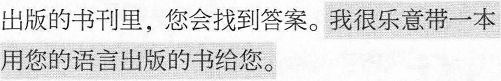MWWWAo 3W«WA0£a mo mows^sw, wwo wb»rh\ mm a
WMB»O Wi^oA
A ^"T y.®SybWIJfi (www.watchtower.org) in s
diKKlWWo
Molim Vas, procitajte ovu poruku
Drago mi je sto smo se sreli. lako ne govorimo isti jezik, sigurno se slazete da je zivot prepun proble-ma. Zato Vam zelim postaviti jedno vazno pitanje: Da li biste voljeli dozivjeti vrijeme kada vise nece biti mrznje, nevolja, bolesti pa cak ni smrti?
Mozda mislite: ’Naravno, no je li to moguce?4 Da, moguce je! Svemoguci Bog, Jehova, obecao je da ce on uskoro stvoriti takve okolnosti. Biblija ot-kriva sto ce Bog uciniti za Ijude: ’’Obrisat ce svaku suzu s njihovih ociju, i smrti vise nece biti, niti ce vise biti tuge ni vike ni boli. Prijasnje su stvari pro-sle“ (Otkrivenje 21:3, 4).
Zamislite samo kako ce biti lijepo zivjeti kad se te rijeci ispune! No kako mozete biti sigurni da cete Vi i Vasa obitelj dozivjeti ispunjenje tog obecanja? Odgovor cete naci u nasim publikacijama koje se temelje na Bibliji. Rado cu Vam donijeti neku publi-kaciju na Vasem jeziku.
Ja sam Jehovin svjedok. Mi Ijudima pomazemo
da razumiju Bibliju. Moje i i Vase ime#. Molim Vas da mi vratite brosuru kako bije i drugi mogli procitati. Hvala.A
,e* je, a volio bih znati
△ Vise informacija na svom jeziku mozete pronaci na Inter-netu (www.watchtower.org).
Prectete si prosim toto poselstvi
Jsem rad, ze Jsem vas potkal. I kdyz nemluvfme stejnym jazykem, asi se shodneme na tom, ze zivot je dnes piny problemu. Chtel bych se vas tedy zeptat na jednu dulezitou ot&zku: Zil byste rad ve svete, kde by nebyla z&dna nenavist, tezkosti, nemoci, a dokonce ani smrt?
Mozna vas napadne: ,Samozfejme, ale copakje neco takoveho mozne?‘ Ano, je. Sam Vsemohouci Buh Jehova slibil, ze brzy zpusobi, aby prave takove podmfnky na zemi nastaly. O tom, co Buh pro lidi udeM, Bible ffka: „Setfe jim kazdou slzu z oci a smrt jiz nebude a nebude jiz ani truchlem ani kfik ani bo-lest. Dffvejsi veci pominuly.“ (Zjevem 21:3, 4)
Jen si pfedstavte, jak stastny bude zivot, az se tato slova stanou skutecnosti. Co ale muzete udelat pro to, abyste se vy i vase rodina teto budoucnosti dockali? Odpoved najdete v biblicke literature, kterou vyda-v£me. Rad v&m tuto literaturu opatfim ve vasem jazyce a donesu v&m ji.
Jsem svedek Jehovuv. Pomahame lidem, aby poro-
zumeli Bibli. Reknu varn sve j znal vase jmeno#. Vratte mi prosim tuto brozuru, aby mohla poslouzit i jinym lidem. Mnohokr^t dekuji?
eno* a r&d bych take
△ Na internetu (www.watchtower.org) najdete vice informaci ve svem jazyce.
Jeg er meget glad for at traeffe dig. Selv om du og jeg taler hver sit sprog, tror jeg vi er enige om at der er mange problemer i tilvaerelsen. Derfor vil jeg gerne stille dig et vigtigt sporgsmal: Kunne du godt taenke dig at leve i en tid hvor der ikke laengere var had, nod og elendighed, ja, ikke engang sygdom og dod?
Du taenker maske: ’Selvfolgelig kunne jeg det, men er det virkelig muligt?’ Ja, det er det! Den almaegtige Gud, Jehova, har lovet at han snart vil sorge for at det bliver s&dan. I Bibelen kan vi laese hvad Gud vil gore for menneskene: „Han vil torre hver tare af de-res ojne, og doden skal ikke vaere mere, heller ikke sorg eller skrig eller smerte skal vaere mere. Det som o
var for er forsvundet." — Abenbaringen 21:3, 4.
Taenk hvor skont livet bliver nar disse ord gar i opfyldelse! Men hvordan kan du sorge for at du selv og din familie kommer til at opleve det? Svaret pa det vil du finde i de bibelske boger og blade vi udgi-ver. Jeg vil meget gerne skaffe noget laesestof p& dit eget sprog og komme tilbage til dig med det.
Jeg er et af Jehovas Vidner. Vi hjaelper andre til at
forstel Bibelen bedre. Jeg vil fortaelle dig og jeg vil gerne bede dig fortaelle mig dit navn#. Giv venligst denne brochure tilbage til mig s& andre ogsa kan laese den. Mange tak.A
it navn*
A Pa internettet (www.watchtower.org) kan du finde flere oplysninger pa dit eget sprog.
Lees alstublieft de volgende boodschap
Ik ben blij u te ontmoeten. Hoewel we niet dezelfde taal spreken, zult u het met me eens zijn dat er veel problemen zijn in het leven. Daarom wil ik u graag een belangrijke vraag stellen: zou u willen leven in een wereld zonder haat, ellende en ziekte, een wereld waarin mensen zelfs niet meer sterven?
Nu denkt u misschien: natuurlijk, maar is dat wel mogelijk? Ja, want de almachtige God zelf, Jehovah, heeft beloofd dat hij daar binnenkort voor zal zorgen. De bijbel vertelt ons wat God voor de mensen zal doen: „Hij zal elke traan uit hun ogen wegwissen, en de dood zal niet meer zijn, noch rouw, noch geschreeuw, noch pijn zal er meer zijn. De vroegere dingen zijn voorbijgegaan.” — Openbaring 21:3, 4.
Stel u eens voor hoe gelukkig mensen zullen zijn als die woorden uitkomen! Maar hoe kunt u ervoor zorgen dat u en uw gezin van deze beloofde toekomst kunnen genieten? U vindt het antwoord in de bijbelse lectuur die we uitgeven. Ik wil u graag een publicatie in uw eigen taal komen brengen.
Ik ben een Getuige van Jehovah. Wij helpen mensen om de bijbel beter te begrijpen. Ik zal u
zeggen en ik zou graag uw naam# willen
weten. Wilt u dit boekje aan me teruggeven, zodat anderen deze informatie ook kunnen lezen?
Hartelijk bedankt.A
△ Op internet (www.watchtower.org) kunt u meer informatie in uw eigen taal vinden.
I am very glad to meet you. Although you and I do not speak the same language, no doubt both of us agree that life is filled with problems. Therefore, I want to ask you an important question: Would you like to live at a time when there is no more hatred, hardship, sickness, and even death?
You may think: 'Of course, but is that possible?’ Yes, it is! The almighty God, Jehovah, himself has promised that he will soon bring about such conditions. The Bible says this about what God will do for mankind: “He will wipe out every tear from their eyes, and death will be no more, neither will mourning nor outcry nor pain be anymore. The former things have passed away. ”—Revelation 21:3, 4.
Just imagine how happy life will be when those words come true! How, though, can you make sure that you and your family will enjoy this promised future? You will find the answer in the Bible literature that we publish. I will be glad to get a publication for you in your own language and bring it to you.
I am one of Jehovah's Witnesses. We help people
to understand the Bible. I will tell you and also I would like to know your na hand this booklet back to me so that others may read it too. Thank you very much.A
11
e#. Please
A On the Internet (www.watchtower.org) you will find more information in your own language.
Mui on hea meel teid kohata. Kuigi me ei raagi sama keelt, oleme kahtlemata uhel noul, et elu on tais probleeme. Seeparast tahan esitada telle uhe tahtsa kusimuse: kas telle meeldiks elada ajal, mil pole enam vihavaenu, muresid, haigusi ja isegi surma?
Ilmselt meeldiks see teile, kuid voib-olla te kaht-lete, kas see on ikka voimalik. Aga see on voimalik! Koigevaeline Jumal Jehoova on lubanud, et peagi muudab ta elu selliseks. Piiblis on kirjas, mida Jumal inimeste heaks teeb: ”Tema puhib ara koik pisarad nende silmist, ja surma ei ole enam ega leinamist ega kisendamist ega vaeva ei ole enam. Sest endised asjad on moodunud!” (Ilmutuse 21: 3, 4).
Moelda vaid, kui onnelik on elu, kui need sonad taide lahevad! Mida te aga peaksite tegema, et teie ja teie pere tulevik oleks selline? Vastuse leiate meie piibliteemalisest kirjandusest. Ma toon teile hea meelega mone valjaande teie emakeeles.
Ma olen Jehoova tunnistaja. Me aitame ini-mestel Piiblist aru saada. Ma iitlen teile, mis on
inu nimi* Kuidas on teie nimi#? Ma palun seda brosuuri tagasi, et ka teised saaksid seda lugeda.
Suur tanu.A
△ Internetist (www.watchtower.org) leiate rohkem infot oma emakeeles.
Edzo dzi nam quto be mfedo go. Togbo be mia kpli wo mfedoa gbe c[eka o ha la, cjikeke mele eme o be mi kata mialo c(e edzi be kuxiwo bo c[e agbe me quto. Eyata medi be mabia nya vevi ac|e wo: Adi be yeano agbe le xexe si me fulele, fukpekpe, dolele, kple ku kura go ha mano o mea?
Dewohi agblo be: ‘E, madii, gake c|e woate qu ava emea?’ E, ava eme! Mawu qusekatato, Yehowa, quto do qugbe be eteje madidi o yeahe totro siawo ve. Bi-blia gblo le nusi Mawu awo na amejbmea qu be: “Mawu latutu ac|atsi sia acfatsi c|a le wofe qku me, eye ku magano any! akpo o, eye konyifafa kple ylido-do kple veve ac|eke magano anyi o; elabena nu gba-towo nu va yi.”—Nyac[ec|efia 21:3, 4.
Wo ya bu alesi gbegbe agbenono avivii ne nya mawo va eme qu kpo! Gake aleke nawo qugbe-dodo sia nava eme na mia kple wo jbmea le etsome? Akpo qucfpclpa le Biblia-srogbale siwo mietana me. Adzo dzi nam be matso agbale siawo dometo ade si le mia degbe me ve na wo.
•:x S'::/~:::::::::::::::
Yehowa Dasefoe menye. Miekpena c|e amewo qu be woase Biblia me. Qkanyee nye*, eye madi be ma-nya gkowd#. Taflatse tro agbale sia nam be matsoe afia ame bubuwo ha woaxle. Akpe na wo kakaka?
△ Ate qu akpo nyatakaka bubuwo le mia degbe me le Internet dzi ne euu adres sia (www.watchtower.org).
Ger so vael at lesa henda bodskapin
Eg eri sera gladur um at hitta teg. Sjalvt um tu og eg tosa hvor sitt mal, eru vit uttan iva samd i, at livid er fult av trupulleikum. Ti havi eg hug at seta taer ein tydningarmiklan spurning: Hevdi tu viljad livad i eini tfd, ta einki hatur var til longur, eingin neyd og heldur eingin sjuka og deydi?
Kanska hugsar tu: ’Sjalvandi, men ber tad til?’ Ja, tad ger! Hin alvaldi Gud, Jehova, hevur lovad, at hann skjott skal syrgja fyri slikum umstodum. I Bibliuni stendur at lesa, hvat Gud fer at gera fyri menniskjuni: „Hann skal turka hvort tar av eygum teirra; deydin skal ikki vera longur, og hvorki sorg, skriggj ella pina skal vera longur — tf hitt fyrra er farid." — Opinberingin 21:3, 4.
Hugsa taer, hvussu gott livid verdur, ta hesi ordini ganga ut! Men hvussu kanst tu tryggja taer, at tu og familjan hja taer sleppa at uppliva hetta? Svar-id finnur tu i bibilskum bokum og blodum, sum vit geva ut. Eg vil fegin skaffa taer tilfar & tinum egna m&li og bera taer tad.
Eg eri eitt Jehova Vitni. Vit hjalpa folki at skilja Bibliuna betur. Eg skal siga taer hvussu eg eiti*, og eg vildi eisini fegin vitad, hvussu tu eitur#. Gev maer vinaliga henda boklingin aftur, so onnur eisini kunnu lesa hann. Takk fyri?
A A alnotini (www.watchtower.org) finnur tu fleiri upplysing-ar a tinum egna mali.
Olkaa hyva ja lukekaa tama sano:
Olen iloinen, kun tapasin teidat. Vaikka emme pu-hukaan samaa kielta, olemme varmasti yhta mielta siita, etta elamassa on paljon ongelmia. Hainan siksi kysya teilta tarkean kysymyksen: haluaisitteko te elaa aikana, jolloin ei enaa ole vihaa, karsimyksia, sairautta eika edes kuolemaa?
Saatatte ajatelia, etta se oils! tietenkin hienoa, mutta ehka mietitte, onko se mahdollista. Kylla se on! Kaikkivaltias Jumala, Jehova, on itse luvannut, etta han saa pian aikaan sellaiset olosuhteet. Raamattu kertoo, mita Jumala tekee ihmiskunnan hyvaksi: ”Han pyyhkii pois kaikki kyyneleet heidan silmistaan, eika kuolemaa enaa ole, eika surua eika valitushuutoa eika kipua enaa ole. Entiset ovat kadonneet.” (Ilmestys 21:3, 4.)
Kuvitelkaapa, miten onnellista elama on, kun nuo sanat toteutuvat! Miten sitten voitte varmistaa, etta te ja perheenne paasette nauttimaan tallaisesta tulevaisuudesta? Voitte loytaa vastauksen raamatul-lisesta kirjallisuudesta, jota meilla on. Hankin mielellani teidan kielellanne painetun julkaisun ja tuon sen teille.
Olen Jehovan todistaja. Autamme ihmisia ymmar-tamaan Raamattua. Kerron teille, mika on minun
nimeni*, ja haluaisin tietaa teidan ni
enne#.
Voisitteko antaa taman kirjasen takaisin minulle, niin etta toisetkin voivat lukea siita taman sanoman. Paljon kiitoksia?
A Internetissa (www.watchtower.org) on lisaa tietoa teidan omalla kielellanne.
Je suis tres heureux de vous rencontrer. Bien que vous et moi ne parlions pas la meme langue, nous sommes certainement d’accord pour dire que la vie n’est pas facile. Je souhaiterais done vous poser une question importante : Aimeriez-vous vivre un jour dans un monde oil il n’y aurait plus ni haine, ni pauvrete, ni maladie, ni meme la mort ?
“ Bien sur, penserez-vous peut-etre, mais est-ce possible ? ” Eh bien, e’est possible. Le Dieu Tout-Puissant lui-meme, Jehovah, a promis d’etablir ces conditions, et il le fera bientot. La Bible nous dit ce que Dieu va faire en faveur des humains : “ Il essuiera toute larme de leurs yeux, et la mort ne sera plus ; ni deuil, ni cri, ni douleur ne seront plus. Les choses anciennes ont dis-paru. ” — Revelation 21:3, 4.
Imaginez comme la vie sera belle lorsque ces paroles se realiseront ! Mais comment pouvez-vous etre sur que vous et votre famille connaitrez ces conditions que Dieu promet ? Vous trouverez la reponse dans les ecrits bibliques que nous publions. Je serais tres heureux de vous apporter une de ces publications dans votre langue.
Je suis Temoin de Jehovah. Les Temoins de Jehovah aident les gens a comprendre la Bible. Je vous donne mon nom* ; j’aimerais connaitre votre nom# Merci de me rendre cette brochure afin que je puisse la faire lire a d’autres personnes. Je vous remercieA.
A Vous trouverez davantage de renseignements dans votre langue sur 1’Internet (www.watchtower.org).
8
8
8 c
c
8 co
£
8.
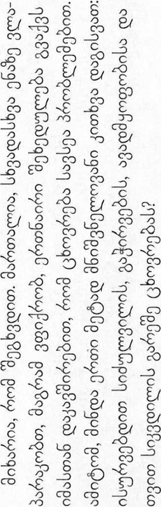GEORGIAN 31
Bitte lesen Sie diese Nachricht
Ich freue mich sehr, Ihnen zu begegnen. Wir spre-chen zwar nicht dieselbe Sprache, aber in einem Punkt sind wir uns sicher einig: Das Leben steckt voller Sorgen und Probleme. Deshalb eine wichtige Frage an Sie: Warden Sie gern in einer Welt leben, die nicht von Hass, Elend, Krankheit und Tod gepragt ist?
Wahrscheinlich denken Sie jetzt: „Naturlich, aber wie soil das moglich sein?“ Sie werden staunen, aber es ist moglich! Der allmachtige Gott, Jehova, hat versprochen, in Kurze ideale Lebensbedingungen zu schaffen. Die Bi-bel beschreibt mit folgenden Worten, was Gott fur die Menschen tun wird: „Er wird Jede Trane von ihren Augen abwischen, und der Tod wird nicht mehr sein, noch wird Trauer noch Geschrei noch Schmerz mehr sein. Die fru-heren Dinge sind vergangen“ (Offenbarung 21:3, 4).
Versuchen Sie sich einmal vorzustellen, wie schon das Leben sein wird, wenn Gott sein Versprechen wahr ge-macht hat! Wie kann diese Zukunft fur Sie und Ihre Fa-milie Wirklichkeit werden? Die Antwort finden Sie in den biblischen Schriften, die wir verbffentlichen. Ich wur-de Ihnen gern etwas in Ihrer Sprache besorgen und vor-beibringen.
Wir Zeugen Jehovas mochten anderen helfen, die Bibel zu verstehen. Ich nenne Ihnen gleich meinen Namen* und wurde mich auch freuen, Ihren Namen# zu erfah-ren. Bitte geben Sie mir dieses Heftchen zuruck, damit ich es auch noch anderen zeigen kann. Vielen DankF
△ Im Internet (www.watchtower.org) finden Sie weitere Informa-tionen in Ihrer Sprache.
riapaKaA<o Aiafuote Aoto to Ay¥£^Pa
Xaipopai noXv nov oaq ouvav ico. Av kqi Sev piXovpE Tqv iSia Y^tbooa, avapcpi^oXa kqi 01 Soo paq ovpcpoovoops 6ti i} £coq sivai yspdTq npopXqpaTa. Fi’ avTO, 9eXco va oaq vnoPdXoo sva oqpavui<6 EpcbTqpa: 0a QsXatE va £qosTE oe Evav Kaipo koto tov onoio 8ev 9a vndpxei nia piooq, Ssivd, appcboiiEq, aKdpq koi Gdvaioq;
'locoq oke(pteite: “Ma Kai ^s^aia, aXXd Eivai Suvaxdv Kan tetoio;” Nai, Eivai! O iSioq o navroSvvapoq Gsdq, o lexcopd, Exei uhooxe9ei o'11 ©a <P^Pei 06 vnap^q TSTOisq ouv-9qKsq ouvropa. H Ayla Fpacpq Xeei ia s^qq avacpopiKd pe to ti 9a icdvEi o Gsdq yia iqv av9pcondiip:a: «Qa E^aXeiipEi kq9e 6dKpo and ia paua Tovq, Kai o 9avaioq 8ev 9a vndp-X£i nia, outs H£v9oq outs Kpavyq ovte novoq 6sv 9a vndp-Xovv ma. Ta naXid sxouv napsX9si».—AnoKdXvipr] 21:3, 4.
OavraoTEiTE jiooo svwxiopevi] 9a Eivai q ^coq oiav SKnXqpGj9ovv avid ia Xoyia! Flcbq, opcoq, pnopEiis va diaacpaXioETS on sosiq Kai q oiKoyevsid oaq 9a anoXavos-T€ avio to vnooxepEvo psXXov; Tqv andvTqoq 9a Tq Pp£i-ts oto Bi^XiKd svrvjia jiov sKdidovpE. Ga xaP^ va Ppw ^va evtvjio ou] Y^diooa oaq Kai va oaq to cpspco.
Eipai Mdpujpaq too Isx^Pd. Epsiq £oq9oupE Tovq av9pconovq va icaTavoqoovv Tqv Ayla Tpacpq. Ga oaq neo to dvopa poo* koi 9a q9EXa Ejrioqq va pd9co to ovopa oa$#. FlapaKaXcb Scoots pov moco avTO to pi£Xidpio yia va pnopEoovv va to Siapdoouv Kai dXXoi. Xaq EUxapioTco napa noXv.A
A Eto IvrepvcT (www.watchtower.org) 0a j3peiie nepioooiepeq nXqpo-cpopi'eq orq \Xwooa oaq.
Id al? Hd d4l SHldifj. <Het SHLHSO. <HIHI °l’l d din, na ^mi<a <al$ldi ®HdHi 41$ Hal 41% §:4l 61<hi din a. dH ‘aa [Ahrl, ?hi ^RhihI $16 na nid%d Is (SR-llddl (HSXHIH. d did i Hal $16 %d4l 4lHl3. d did; 1 $16 %d^ d did; ?hA, H’J’tdldl ®HdHi4l H^l’j Ha dlHpldld H^l %H, dl ?j dHd ?Hl iRdlHL did °lA?
dHd C-LL’d i 4bj dl H41 ‘K d dl. Ha %3r. 4{<j W <Hd?l! =4$ Hdld H’HHd, tfH’j dlH Hdldld a, 4 Hid and =xlH a 1, d ^iHi ^(Infcl sainai h< hhhih?!. HHd d<4 3HIH§1 ^Pia ^HlUd °X Gl<dl a. dlH 4tl If, HtilHlti hCh-H rnwti ?j $d a: d ^IH'Sfl “=HiHlHL’i &$ 5HL^i <3,al dlH«l; HHa $3141 HdR d4l; dd °IS ?ll$ It §td It $3.41 HdR d4l; HHH41 Hldl ^41 ^^C-U tS.”—H$^l$Ha H%:3, 'a'.
shA, ’A ndd y,d4ddl $16 hr °t dfe din! na ddd ddl dHRL Hfi-HRd ^IHl ^Msl $6 3ld H«(l dl ? dHd 4bdl HHl'H =HHR1 dlferHHl H«l?l. 4 ?A dHRl HR
H^adlHi ai4l d£.
;HH Hdlniddl Hl^l^l d31 al*!. ^H HHl
al$ld Hfna dRHHl4l H<HH<dl ?Hl didl a'l’A.
dHd Hlj did* ^ai<i ^d dH H'2t Hd dHlj did* <?fai4l ?l$l. 541 dlHil Hd Hial 5HlH?ll, ^41 4 41% C-tl$ld Ha ’Hl dldl 4dl4l ?l|. dHl3 5HICHR?
△ dHA q.% nite-Al A«ici4l dn dl, A^i^a
Mwen byen kontan rankontre w. Menmsi mwen menm avek ou nou pa pale menm lang, mwen kwe non toule de dako ak pwen sa a : lavi a chaje ak pwo-blem. Se sa k fe mwen gen yon kesyon enpotan mwen ta renmen poze w : Eske w pa ta renmen viv nan yon monn kote pap gen lahen, pwoblem ekonomik, maladi ak lanmo ?
Ale we, nan ke w ou di : ‘ Setenman, men eske sa posib ? ’ Wi, sa posib ! Se Jewova menm, Bondye Tou-pisan an, ki pwomet nou kondisyon sa yo pral egziste tale konsa. Men ki sa Bib la di konsenan sa Bondye pral fe pou limanite : “ Li pral siye tout dlo nan je yo, e lanmo pap la anko, ni dey, ni rel, ni doule pap la anko. Bagay ansyen tan yo disparet. ” — Revelasyon 21:3, 4.
Eske w imajine nan ki pwen lavi a pral bel le pawdl sa a akonpli ? Men, ki sa pou w fe pou ou menm ak fanmi w jwenn plas nou nan avni sa a Bondye pwomet nou an ? W ap jwenn repons kesyon sa a nan piblikasyon nou pibliye ki baze sou Bib la. M ap byen kontan fe w jwenn yon piblikasyon nan lang ou pale a.
Mwen se Temwen Jewova. Nou la pou n ede moun konprann Bib la. M ap di w ki jan m rele*, e m ta renmen konnen ki jan w rele# tou. Tanpri, remet mwen bwochi sa a pou m ka fe lot moun li ladan 1 tou. Mesi anpil?
A Gen lot enfomasyon ki disponib sou Entenet (www.watch-tower.org) nan pwop lang pa w.
HAITIAN CREOLE 35
man nrx mnix .qniN vinah tine nnv? nN mnrny wn n>aunv par pN haN ,nav nniN nN tnawn nhNiy -]niN hwiyh ph .nvpa ’Nhn
>hm ,mnyp ,nbmy Nhh nhiya nvnh nxnn dnh ?nnn xhh ihPNi
!p pN ’nn'PflN FIT DNH haN /Nil' pDNFI >hlN anpa nwh mvan ,his> hian hNn ,inm> mm pnh nw mmhN nn hniq Nipnn nhxa d’njd num mm ■>hn nnm ,rwh rmnn yh>3" rnwunn
■»5 ,pnNFi ha hpn t»p> top naim ,m3fl ha hpn .(8:F)"a imyun) "nan mn* tmnn vm d'hvind nna iy nnsyh infi nnNiy N-mh ham -wa -jx itnyann it hnidip nawnn nN ?nr nvam T>nyn umn inna^m nnvN .mNh nwmn nxiy n’Nipnn mnana Nsnn .p»hN mmhi piaiya nnan awnh nN panh n^viNh wmp 13N .mm'nyn inN >ix
•>h nmn .#pw nn ninh nmyNi *’nv> .Nipnn .13 NTiph ihav wifn dw na paavn nN n^paa A.-jh nan min
qrm in>o N^nn (www.watchtower.org) vnvrnn △
Palihug Basaha Ini nga Mensahe
Nalipay ako nga makilala ka. Bisan pa lain ang imo lenguahe sa akon, walay duhaduha nga nagaugyon ka man nga ang kabuhi puno sing mga problema. Busa, luyag ko ipamangkot sa imo ang isa ka importante nga pa-mangkot: Luyag mo bala mabuhi sa isa ka tion nga wala na sing pagdumtanay, kabudlayan, balatian, kag kamata-yon pa gani?
Ayhan magasiling ka: ‘Siempre, apang posible bala ina?’ Huo! Ang labing gamhanan nga Dios nga si Jehova nagsa-ad mismo nga paluntaron niya ini nga mga kahimtangan sa indi madugay. Tuhoy sa himuon sang Dios para sa ka-tawhan, ang Biblia nagasiling: “Pahiran niya ang tagsa ka luha sa mga mata nila, kag wala na sing kamatayon, ukon kalisod ukon paghibi ukon kasakit pa, kay ang nahau-nang mga butang nagtaliwan.”—Bugna 21:3, 4.
Hunahunaa lamang kon daw ano ka makalilipay ang kabuhi kon matuman na ining mga pulong! Apang, paano mo mapat-od nga ikaw kag ang imo pamilya maka-agom sining ginsaad nga palaabuton? Makita mo ang sa-bat sa Biblikanhon nga literatura nga ginabalhag namon. Malipay ako nga dalhan ka sing isa ka publikasyon sa imo lenguahe.
Isa ako sa mga Saksi ni Jehova. Ginabuligan namon ang mga tawo nga mahangpan ang Biblia. Isugid ko sa imo ang akon ngalan*, kag luyag ko man mahibaluan ang imo ngalan#. Palihug ibalik sa akon ini nga polyeto agod mabasa man ini sang iban pa. Madamo gid nga sala-mat.A
A Sa Internet (www.watchtower.org) makasapo ka sing dugang pa nga impormasyon sa imo lenguahe.
HILIGAYNON 37
3i iqq Pncm ip a^a ft l ^r'z ?q tWf ^w qff t WT ^T W <R ?RR Wd 5Hlft fyR’ft wram $ aft 11 aqqq w ?raft aw w arfar/at; aar anq <?fr 4 atar awt aqaa, hw<
W Wi atR RR RT aHt-faw ar ft ?
'W 3TFKW: ‘cRffn^f, ^frst,
fcMcJptf t! n^livbHM a-R^R <RtcJT3 cfKT f^TI t
<ga cr- ir[t tt cb<Aciidi 11 ^iwr ^n?ft I qqrcb^cJMl t: •'^-3^^ 3nvaFHzw w?; q afk q §w, q fc^nq, q
<ftfT s| I A’ I ”—W^WIcFT 2 1:3, 4.
^TT ^rft! sm efk OTW qfw< ■‘WZIH
qrq f^RT >nq crjt cjr ^tw <w
HIRcT 4 qr Hcf^ t Wia 11 3WFT q q? HlfeRT 3TR qcF> qfrlFt 4 qgq Tpft ?Mt I
<jkw cjq/qrr Hisft f I h^rr 3 riH
qqq cfR^ 11 <ihq oiidi * qqr t qs # ■snqcfit q?naT/rft f sfR
3nu<ni^nai# <qTWWRT/mi^RTqqq^qKqqqq?-
t aw qq W I 2WFT ?RT-
CW |A
△ $d<Ad (www.watchtower.org) q? Hiqr 4 cfk wrr ^mi<| qiHcbHt I
Kuv zoosiab tau ntsib koj. Txawm koj thiab kuv tsis hais ib yam lus los, wb ob leeg yeej pom tau haistias lub neej no muaj teebmeem puvnpo. Yog li ntawd, kuv muaj ib lolus tseemceeb xav nug koj: Koj puas xav nyob rau lub caij thaum uas tsis muaj kev sib ntxub, kev nyuajsiab, kev mobnkeeg, thiab txawm kev tuag los tsis muaj li lawm?
Tej zaum koj yuav haistias: ‘Xav tiag, tiamsis puas muaj tau li ntawd?’ Tau xwb! Vajtswv tus muaj hwjchim tshaj plaws, uas yog Yehauvas, nws tau coglus haistias tsis ntev nws yuav ua raws li tau hais tas los saum no. Phau Vaj-lugkub hais txog tej yam Vajtswv yuav ua rau noobneej li no: “Nws yuav so lawv tej kua muag huv tibsi mus. Tej kev tuag, kev ntxhov slab, kev quaj ntsuag thiab kev mob kev nkeeg yuav tsis muaj ib zaug li lawm. Tej uas sawvdaws ibtxwm muaj los twb ploj tas lawm.”— Tshwmsim 21:3, 4.
Sim xav seb, lub neej no yuav zoosiab npaum li cas thaum muaj tseeb raws li cov lus no! Yuav ua li cas koj thiaj paub tseeb haistias yav tom ntej koj thiab koj tsevneeg yuav tau nyob zoosiab hlo raws li cov lus tau cog tseg no? Koj yuav nrhiav tau lolus teb nyob rauhauv cov ntawv Vajlugkub peb luam tawm. Kuv mam li nqa ib phau uas yog koj yam lus tuaj rau koj.
Kuv yog Yehauvas ib tug Timkhawv. Peb pab kom tibneeg totaub phau Vajlugkub. Kuv mam li qhia kuv lub npe* rau koj, thiab kuv kuj xav paub koj lub npe# thiab. Thov muab phau ntawv ko rovqab los rau kuv es Iwm tus thiaj tau nyeem thiab. Ua koj tsaug ntau ntau?
A Nyob rau Internet (www.watchtower.org) koj yuav nrhiav tau ntau yam uas hais koj yam lus.
Kerem, olvassa el ezt az iizenetet:
Nagyon orulok, hogy talalkoztunk. Bar nem beszel-jiik egymas nyelvet, biztosan mindketten egyetertunk abban, hogy az elet tele van bajokkal. Ezert szeret-nek feltenni onnek egy fontos kerdest: Szeretne olyan vilagban elni, amelyben nem lesz tobbe gyuldlet, gyotrelem, betegseg, sot halal sem?
Talan arra gondol: „Persze, szeretnek. De lehetse-ges ez?” Igen, lehetseges! Maga a mindenhato Isten, Jehova tett fgeretet arra, hogy hamarosan megszunte-ti ezeket a gyotro allapotokat. A Biblia ezt mondja ar-rol, hogy mit tesz majd Isten az emberiseggel: „letorol minden konnyet a szemukrol, es nem lesz tobbe halal, sem keserges, sem kialtas, sem fajdalom nem lesz tob-be. A kor&bbi dolgok elmultak” (Jelenesek 21:3, 4).
Kepzelje el, milyen boldog elet lesz az, amikor meg-valosulnak ezek szavak! De vajon mit kell tennie ah-hoz, hogy on es a csaladja elvezhessek ezt a megfgert jovot? Valaszt kap erre az altalunk kiadott bibliai iro-dalomban. Szfvesen hozok onnek ilyen kiadvanyt * az anyanyelven.
Jehova Tanuja vagyok. Segftunk az embereknek, hogy megertsek a Bibliat. Megmondom onnek a ne-vem,* es szeretnem megtudni, hogy mi az on neve.# Kerem, adj a vissza ezt a fuzetet, hogy masok is el-olvashass&k. Koszonom szepen?
A Az interneten (www.watchtower.org) meg tobb informaciot olvashat az anyanyelven.
Pangngaasim ta Basaem Daytoy a Mensahe
Maragsakanak unay a makisarita kenka. Nupay agdu-ma ti pagsasaota, di pagduaduaan nga umanamongta a napno ti biag iti parikut. Gapuna, adda napateg a salud-sod a kayatko nga iyimtuod kenka: Kayatmo kadi ti agbiag iti panawen nga awanen ti gura, rigat, sakit, ken uray patay?
‘Siempre,’ mabalin a kunam, ‘ngem posible aya day-ta?’ Wen! Ti mannakabalin-amin a Dios a mismo, ni Je-hova, inkarina nga iyegnanto dagiti kasta a kasasaad iti saanen a mabayag. Kastoy ti kuna ti Biblia maipapan iti aramidento ti Dios maipaay iti sangatauan: “Puna-sennanto ti amin a lua kadagiti matada, ket awanton ni patay, awanto metten ti panagleddaang wenno panagsa-ngit wenno ut-ot. Ti immuna a bambanag naglabasdan.” —Apocalipsis 21:3, 4.
Panunotem laengen no kasano karagsak ti biag inton matungpal dagita a sasao! Ngem kasanom a ma-sigurado a sika ken ti pamiliam matagiragsakyonto daytoy a naikari a masakbayan? Maammuam ti sung-bat iti naibatay iti Biblia a publikasion nga impablaak-mi. Pagragsakak ti mangala iti publikasion iti mismo a ■ ... .... ..... .... - . pagsasaom ket iyegkonto kenka.
Maysaak kadagiti Saksi ni Jehova. Tultulonganmi dagiti tattao a mangtarus iti Biblia. Ibagak kenka ti naganko*, ken kayatko met a maammuan ti naganmo# Pangngaasim ta isublim kaniak daytoy a bokleta tapno mabasa met dagiti dadduma. Pagyamanan unay?
△ Iti Internet (www.watchtower.org) inakasarakka iti kanayonan nga impormasion iti mismo a pagsasaom.
Saya senang sekali dapat bertemu dengan Anda. Meski-pun Anda dan saya tidak bcrbicara bahasa yang sama, pas-tilah kita berdua setuju bahwa hidup ini penuh dengan problem. Oleh karena itu, saya ingin mengajukan suatu per-tanyaan penting kepada Anda: Apakah Anda senang untuk hidup pada suatu zaman manakala tidak ada lagi kebenci-an, kesusahan, penyakit, dan bahkan kematian?
Anda mungkin berpikir, Tentu saja, tetapi apa mungkin?’ Ya, mungkin saja! Allah Yang Mahakuasa, Yehuwa, sendiri berjanji bahwa la akan segera mewujudkan kondisi seperti itu. Alkitab mengatakan apa yang akan Allah laku-kan bagi umat manusia, ”Ia akan menghapus segala air mata dari mata mereka, dan kematian tidak akan ada lagi, juga tidak akan ada lagi perkabungan atau jeritan atau rasa sakit. Perkara-perkara yang terdahulu telah berlalu.” —Penyingkapan (Wahyu) 21:3, 4.
Coba bayangkan betapa menyenangkannya kehidupan itu kelak manakala kata-kata tersebut menjadi kenyataan! Namun, bagaimana Anda dapat memastikan bahwa Anda dan keluarga Anda akan menikmati masa depan yang dijan-jikan tersebut? Anda akan menemukan jawabannya dalam lektur Alkitab yang kami terbitkan. Saya senang membawa-kan sebuah publikasi bagi Anda dalam bahasa Anda.
Saya adalah salah seorang Saksi-Saksi Yehuwa. Kami membantu orang-orang mengerti Alkitab. Saya akan member! tahu nama saya*, dan saya juga ingin mengetahui nama Anda#. Tolong kembalikan buku kecil ini kepada saya sehingga orang-orang lain dapat membacanya juga. Terima kasih banyak?
A Di Internet (www.watchtower.org) Anda dapat menemukan lebih banyak informasi dalam bahasa Anda.
La prego di leggere questo messaggio
Mi fa molto piacere conoscerla. Anche se non par-liamo la stessa lingua, sicuramente siamo d’accordo sul fatto che la vita e piena di problemi. Vorrei quin-di farle una domanda importante: Le piacerebbe vi-vere in un mondo in cui non ci saranno piu ne odio, ne difficolta, ne malattie e nemmeno la morte?
Forse pensera: ‘Certo che mi piacerebbe, ma e possibile?’ Si, lo e! L’Iddio Onnipotente, Geova, ha promesso che presto portera tali condizioni. Par-lando di cid che Dio fara per il genere umano, la Bibbia dice: “Asciughera ogni lacrima dai loro occhi, e la morte non ci sara piu, ne ci sara piu cordo-glio ne grido ne dolore. Le cose precedenti sono pas-sate”. — Rivelazione (Apocalisse) 21:3, 4.
Pensi che felicita si provera quando queste parole si awereranno! Ma in che modo lei e la sua fami-glia potete essere tra coloro che vedranno realizzar-si questa promessa? Trovera la risposta nelle nostre pubblicazioni bibliche. Sard felice di portarle una pubblicazione nella sua lingua.
Noi testimoni di Geova aiutiamo le persone a capi-
re la Bibbia.
Le diro il
e mi farebbe pia
cere conoscere anche il suo no: restituirmi questo opuscolo affinche possa farlo leggere ad altri. Grazie mille.A
e#. La prego ora di
△ Su Internet (www.watchtower.org) trovera ulterior! infor-mazioni nella sua lingua.
££^T§TdtvL<®Ltto foftLft^iiSVMcgSts^ l± ft w
Lj^fro <tlT, AW£L&—'O^faLftV^gXWtto 1f LATSifiT^iMAft<, ^$:tLftV^ftC:£?SLftV'A-®. totitifAZT'o
rfeft3Ao LfrL, W^MWcWj it&W5 j^l^mAo wwim-et ^0#T*5x^/\'r S#^,M;Lft<^0t^ftttW^feftbti:^®LT#5bnt ■to tt^A^OfttoEffftt)115Wffilu-9V><, WW!iLLi£yX
fe(i^5E!ift<, Wi0L<W
®^'AoftOTi>5Jo —21:3,40
Og^WtSHe, ±®^A'n(tft^taftt0£ft?>A^
W LX< ft $ 0 o A' (i, ft it t>, Eo t ti 0) $
nft#^^5I^E§5f0t>OC^$5T'L<k'7^o
LTV BW#W 0 * ft gx&M 0 ft -a- £ to * ft ft® M®T»
^HfttH)®tt^®AT13^^Ltto
^(ix^/WgiEATto ftftftll:, ^A^W£Wt3*3 3MS0&L-Wtto &0^®J*$-13fexLtt0T,$^0 $&B!J*WTWftfttfttfro
^ATV''ftft#ftl''0T, J5®L<ft$n!idnL<®V'>tto S) 0^A?r£L£toA
A^f>^—^'y b(www.watchtower.org)2bZ£fc0 ann’C$
MbiHa xaSapabi OKbin uibiFybiHbi3Abi OTineM
Ci3,zii KeazjecTipreniMe ©Te ^yanBiniTBiMBin. EneyMis eni Tiji/je cofijiereniMisSen, ©Mip/iin; ^HMHinbuibi^Tapra tojibi eKemMen, c©3 jkok;, eneyMis KejiiceMia. Con^Bi^Tan ,qa ciare MBinaflafi ManBiazjBi cypait hp^fbim Kejiin e/ji: JKep 6e-Tin/je HteKKepynrijiiK, jko^hibijibik; nen aypy, TinTi ©jiiM 6ojiMafiTBiH Kea^e ©Mip cyprii^is Kene Me?
Cia: “Qpnne, 6ipan; 6yji MyMKin eMec upfi”,— /jen ofi-jiapcBia. Ajiafi^a 6yji aG/jen MyMKin! JKa^Binzja ocBin/jafi earepicTepAiH, 6ojiaTBiHBiH K^y^ipeTTi Kyflafi HehoBanBin; eai ya/je eTin OTBip. ^y/jafiftBiH; a^aMaaT yrnin ne icTeftTini TypajiBi Knejii Kiyan 6Bijiafi zxefi^ii: “Oji SapjiBiK; Keshin; HcacTapBin cypTin TacTan jKySaTajjBi. En/ji R;afiTBm ejiiM, jKOK^Tay, aap enjpey Men aypy SojiMaft/jBi. Ce6e6i 6ypBiHFBi ajieM KypBin, jkok; Soji/jbi” (Ahh 21:3, 4).
Ocbi ce3Aep JKy3ere ac^an/ja, naH/jafi Sbi^bittbi eMip 60-jiaTBiHBin KO3 aji,HBiH;Bi3Fa enecTeTin Kepin;i3nii! Ajiafi/ja O3in;i3 none ©T6acBin;Bi3 ocBin^afi 6ojiamaK;TBiH; pan;aTBiH Kepe ajiaTBiHBin;Bi3Fa Kanaft ceniMzii 6ona ajiacBi3? JKa-yanTBi 6i3 SacBin niBirapaTBin Kneni KiTani^a neri3,n;ejireH aaeSneTTepflen Ta6a ajiacBi3. Ci3re 03 ana TijiiH;i3Ae a«e-
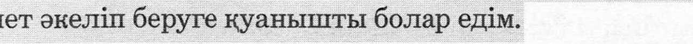Men — HehoBa KyarepiMin. HehoBa Kyarepjiepi a,naM-flapra Kneni KiTanrBi Tycinynepine K0MeKTece^i. Men ci3-re e3 eciMiMfli* aftyaftbiH, api cis/uH A© eciMini3fli# 6ijiriM Kenin eai. 03rejiep ocbi 6ponnopanBi on;n ajiy yinin 03iMe ^afiTapBin 6epyiHj3/ji OTineM. Kan pan;MeT.A
△ HnTepneTTen (www.watchtower.org) ©3 TijiinjaAe K©6ipeK MajiiMeT Ta6acBi3.
Nishimiye cyane kukubona. N’ubwo Jye nawe tutavu-ga ururimi rumwe, twembi twemera rwose ko ubuzima burimo ibibazo byinshi. Ku bw’ibyo, hari ikibazo cy’i-ngenzi ngira ngo nkwibarize: mbese wakwishimira ku-zabaho mu gihe inzangano, imibabaro, indwara ndetse n’urupfu bizaba bitakiriho?
Wenda ushobora gutekereza uti ‘ibyo nta ko byaba bisa; ariko se birashoboka?’ Birashoboka rwose! Imana ishoborabyose Yehova, yo ubwayo yasezera-nyije ko vuba aha izashyiraho iyo mimerere. Bibiliya ivuga ibyo Imana izakorera abantu igira iti “izahanagu-ra amarira yose ku maso yabo kandi urupfu ntiruzaba-ho ukundi, kandi umuborogo cyangwa gutaka cyangwa kuribwa ntibizabaho ukundi kuko ibya mbere bishize.” —Ibyahishuwe 21:3, 4.
Ngaho tekereza ukuntu ubuzima buzaba bushi-mishije igihe ayo magambo azaba yashohojwe! None se, wamenya ute niba wowe n’umuryango wawe mushobo-ra kuzabaho muri icyo gihe kizaza cyasezcranyijwe? Uzabona igisubizo mu bitabo twandika by’imfashanyi-gisho za Bibiliya. Nakwishimira kuzashaka igitabo kiri mu rurimi rwawe maze nkakikuzanira.
Ndi umwe mu Bahamya ba Yehova. Dufasha abantu gusobanukirwa Bibiliya. Ndi buze kukubwira izina ryanjye*, kandi nanjye nakwishimira kumenya izina ryawe#. Noneho nsubiza ako gatabo kugira ngo abandi na bo bazashobore kugasoma. Murakoze cyane?
△ Ushobora kubona ibitekerezo by’inyongera biri mu rurimi rwawe ku muyoboro wa Internet (www.watchtower.org).
Byji 6hjiahpyyhY OKycani»i3
Ch3^h TKOJiyKTypraHbiMa KydaHbmTaMbiH. 3ne th-jindns ap daiiiKa SojiroHy mchch, cn3 /ja /Kamoo^o Kbi-HbiHHbuibiKTap KGn SKennHe KomyjiaT Hbirapcbi3. OmoH/iyKTaH cnsre 6np Maannjiyy cypoo GeprnM kcjict: TKck KopYY^Y-^YK’ KbinbiHHbuibiKTap, oopyjiap, aTyryji GJiyM 6oji6on TypraH saMan^a atamoony KaananT 6ejie-H,H3?
«Aji6eTre, SnpoK an/jan sawan dojiymy MyMKyH6y?» — /ten onjioHTTypcys. Ooda, MyMKyn! KynypeTryy Kyztan-.zjbiH G3y, TKaxada, jKaKbiH/ja /tan ymyn/tan niapTrap/jbiH dojiopyu yda^ajianT. blnbiK KnTenTe Ky/tan/tbin a#aM3aT ynyn 3MHejiep/tn KbiJiapbi jKerryH/to muhtmii anTbijiaT: «Kyztan anapAbiH Kes/tepyH/tery Sap^biK JKaniTbi aap-MbiiiT. 0jiyM /jereH SojiGoht. bln ^ereH, eKypyK /jereH, oopy ^ereH 6oji6oht, aHTKenn MypyHKynyH daapbi ©Tyn KeTKeH» (Ahh 21:3, 4).
Byji ces^ep aTKapbuiraH/ja TKanioo Kanaan rana daKbiT TapTyyjiapbiH 3JiecTeTceH;n3! BnpoK ySa^ajianraH yniyH-/jan 3H coHyH KejieneKKe cn3 yn-dyjieHys mchch KaHT-KeH^e jkctc anacbis? Byji cypoonyH 3KOo6yH 6h3 Sacbin HbirapraH binbiK khtchthk a/jaSnaTrapAaH Tada anacbis. 3ne Tnjmnn3/je a^adnaT anbin cnsre Kanpa Kejryyre KydaHbiHTa Sojiom.
Men TKaxadaHbiH KydejiepyHyH dnpnMnn. Bns 6am-Kanapra BlnbiK KnTeirrn TymyHYyre TKap^aM 6epe6ns. Men esyM^yn aTi>iM/ji>i* anTaM, cns/^nn ^a
dnjiyyHy KaananM. BauiKa/iap OKymy ynyn, 6yji Kn-Tennenn Mara Kanpa depnuns. Hoh; bipaxMarA.
A PlHTepHeTTeH (www.watchtower.org) 03 THJiMans^e KoSypeoK MaajiBiMaT Tada aaacbia.
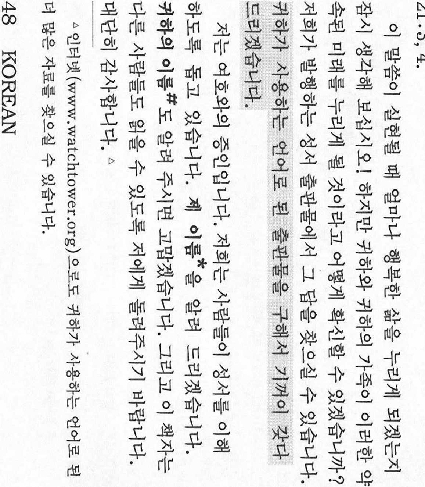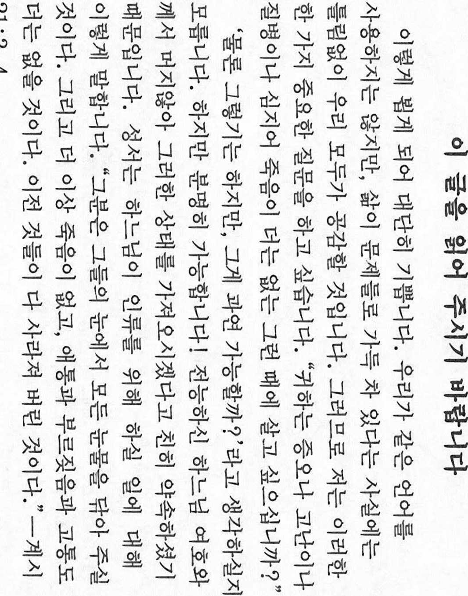Ez bi ditina we pir dilxwe§im. Herqend zimane me yek nebe Ji, be guman em di yek nuxte u mijareki de hemfi-krin: Jiyan teji xem, alozi u pirsgirek e. Bo ve yeke, ez dixwazim Ji we pirseki giring bikim: Gelo weye bixwesti-buya di dunyayek benefret, bexizani, benexwe§i, u bemi-rini de bijiya?
Dibe ku hun bifikirin: ‘Helbet bele, le ev we Qawa bibe?’ Rune li ve gotine biheyirin, le bele ev rasti ye! Xwede mutleq, Yahowa, bi xwe soz daye ku ewe zu §ert u mercen ve jiyane biafirine. Pirtuka Piroz li ser ve mijare dibeje ku we Xwede bo mirovan qi bike: “We hemu hesi-ran Ji Qaven wan ve paqij bike. We edi mirin tune be. Edi we ne §in hebin, ne giri, ne Ji e§ hebin. Ji ber ku sa-zumana bere Ji navende ve rabuye.”—Xuyabun [Peyxam] 21:3, 4.
Careki binin ber gaven xwe we jiyan gawa be, dema Xwede ve soza xwe bine cih! Le bele gawa ev pa§eroja bextewer dikare bo we u malbata we bibe rasti? We hun bersive di nivi§ten Pirtuka Piroz de, ku em diwe§i-nin bibinin. Eze bixo§hali di zimane we de we§aneki peyda bikim u ji we re binim.
Em §ahiden Yahowa ne. Em dixwazin Ji mirovan re alikariye bikin, daku ew Pirtuka Piroze fehm bikin u tebigihin. Ez dixwazim nave xwe* ji we re bibejim, eze xo§hal bim, eger ez nave we# bizanibim. Ji kerema xwe re ve berhevoke disa bidin min, daku kesen din ji bikari-bin bixwinin. Zor spas u Xwede Ji we razi be!A
△ Hun dikarin di Internets de (www.watchtower.org) agahdariyek pirtir di zimane xwe de bibinin.
KURMANJI KURDISH (Roman script) 49
aaanTaznanazn’fniJudiTJ. ifjgiijjuanzjaniS'itiVod'inzj'i oy o it o oy n i oo <o <o o/ V) i
ann^anunnau immu^gasioiunaa^anaagauisamjjid
fiy 27 07 fl 2> 07 2/ O O O 07 I
oaauumayiaaydag. aauiiuauu asaeqnjjfinqajja'ifiuoa:
Mnimgmuu^ci lu^^zjnumuznujj^o^ungn^g ^anu^in
aan aanuiaudaa Kasuuuimaaajjnaau?
dinuaanasFinaa: 'nagmuiiin uteinurnuuuitlij'MVci
O 071 14 114 27 I 1^- <O <O O O
w iduid(niiuuain radluiaaraaa agjjaatiariagaiuci
07 1427271 27027(00. CL/ I O 0.14 O
auaniaiiaaanasaagiuiisnjjaswaunaiiagnaa. aimuiuu
t i ay ’ i 27 ay
a^man^anuagftraaaasisniSausijn^’inagu: "raaaaj;
07 O* 07 <O o o. O 14 I
^nLmnuigmnsmrmsggts'n ua£Mn<um^ujjn(U uas fiaaranlan iia^sagim iiasiaudacr^ujjnid. imaaaaguio o. 071 n I 07 O I 14 I 27 O I O
mntimdnmnguuuraagidtm."—^ndnnn 21:3, 4.
o o i co o. । Q n o
aaagunuauaanuigoasjMfiaajjanuiaaEjdniiiniJjaaa ijnaaijuanianiduag! iimhnuramWnd'notnaa zhnuisofiu aaufiaa^ngsunanMaua^aijLi? diniiaiiQiJannauTumuga
I
nago n^afwafiimdratjanaagaaSjj. aaadufia^iaa uiijgaTuuaaaaagdinuuaTdhiijiaOTija.
aamtJuSenurad'tman. uanassj^aad^n^uTmiaata
O 0.14 O 27 n Ob O Q 27 27 O*
fnmmuu. aaaatusn^aaonwisg* iiatauanluis^aag
f it 1 <0 010.002/0.27 CO 14 10 27 O <O O
mu tin. n^auaagduufiuluiizjaaafjasianidi^unauau
an. aaautayiaaag.^
A or^oy/ ill !• Vlt> o’ Q <r» r> o.
△ loejmosuiniua [www.watchtower.org] uinu^iaejjmumansggnunjjgn.
Loti priecajos jus satikt. Mes runajam dazadas va-lodas, tacu drosi vien esam vienispratis, ka dzive ir daudz problemu. Tapec es gribetu uzdot sadu jauta-jumu: vai jus veletos dzivot pasaule, kura nebutu naida, grutibu, slimlbu un pat naves?
Varbut jus domajat: ”Ja, protams, bet tas tacu nav iespejams!” Tomer ir pamats tam ticet. Visvare-nais Dievs Jehova ir apsolijis driz radit sadus dzives apstaklus. Bibele ir rakstits, ko Dievs paveiks cilve-ku laba: ’’Vins nozaves visas asaras no vinu acim, naves vairs nebus, nedz bedu, nedz vaidu, nedz sap-ju vairs nebus, jo, kas bija, ir pagajis.” (Atklasmes 21:3, 4.)
ledomajieties, cik briniskiga bus dzive, kad sie vardi bus piepildijusies! Bet ka jus un jusu tuvinie-ki varat to pieredzet? To Jus varat uzzinat no bibelis-kajam publikacijam, ko izdod musu organizacija. Es labprat parupetos, lai jums butu iespeia laslt A A A A J
kadu publikaciju jusu dzimtaja valoda.
Es piederu pie Jehovas liecinieku organizacijas. Jehovas liecinieki palidz cilvekiem labak saprast Bi-beli. Es jums pateiksu, ka mani sauc* un labprat uzzinatu, ka sauc jus#. Vai drikstu palugt so bro-surinu atpakal, lai varetu to paradit ari citiem cilvekiem? Liels paldies?
A Plasaku informaciju jusu dzimtaja valoda var atrast inter-neta (www.watchtower.org).
Nasepeli mingi kokutana na yo. Atako ngai na yo tolobaka monoko moko te, kasi biso nyonso toyebi malamu ete bomoi na biso bato etondi na mikaka-tano. Yango wana, nalingi kotuna yo motuna ya ntina mingi oyo: Okosepela kozala na bomoi na ntango oyo koyinana, mpasi, maladi ata mpe liwa ekozala lisu-su te?
Ntango mosusu okoloba: ‘8e, nakosepela mingi, kasi likambo yango ekoki mpenza kosalema?’ 8e! Yehova, Nzambe Mozwi-ya-Nguya-Nyonso, moto alaki ete etikali moke alongola makambo yango. Mpo na makambo oyo Nzambe akosalela bato, Biblia elobi boye: “Akopangwisa mpisoli nyonso na miso na ba-ngo, mpe liwa ekozala lisusu te, na mawa na koganga na mpasi ekozala lisusu mpe te. Makambo ya kala esili koleka.”—Emoniseli 21:3, 4.
Kanis& naino, bato bakozala na bomoi ya esengo mpenza ntango maloba wana ekokokisama! Kasi, okosala nini mpo yo na libota na yo bozala na bomoi yango oyo Biblia elaki? Okozwa eyano na mikanda na ■
biso oyo elimbolaka Biblia. Nakosepela koyela yo mo-kanda moko oyo ekomami na monoko oyo olobaka.
Nazali Motatoli ya Yehova. Tosalisaka bato bayeba Biblia. Nkombo na ngai*, bongo nkombo na yo nani#? Zongisela ngai mwa buku oyo mpo bato mosusu bakoka mpe kotanga yango. Matondi mingi?
△ Okokuta makambo mosusu oyo ekomami na monoko oyo olobaka na Internet (www.watchtower.org).
Malonu su jumis susipazinti. Nors kalbame skirtingomis kalbomis, abu tikriausiai sutinkame, kad gyvenimas kupinas sunkumu. Argi nesinore-tu gyventi pasaulyje be neapykantos, vargo, ligtj ir netgi mirties?
Galbut pagalvosite: „Zinoma, bet ar tai jmano-ma?“ Taip! Visagalis Dievas Jehova pazadejo ne-trukus visk^ pakeisti. Apie tai, k^ Dievas padarys del zmonijos, Sventajame Raste sakoma: „Jis nu-sluostys kiekvien^ asar^ nuo jq akiq; ir nebebus mirties, nebebus liudesio nei aimanos, nei sielvar-to, nes kas buvo pirmiau, tas praejo.“ (Apreiskimo 21:3, 4)
Isivaizduokite, koks laimingas bus gyvenimas, kai sie zodziai issipildys! Taciau kaip galite buti tikras, kad Jus ir jusq seima sulauksite tos pa-zadetosios ateities? Atsakymq rasite musu leidzia-moje biblineje literaturoje. As mielai paieskosiu leidinio jusq kalba ir atnesiu ji jums.
Esu Jehovos liudytojas ir padedu zmonems suprasti Svent^Jj Rastq. Pasakysiu jums savo varda|*, del to noreciau zinoti ir just) vard^#. Prasom grqzinti man siq brosiurq, kad galetu perskaityti ir kiti. Dekoju.A
A Internete (www.watchtower.org) rasite daugiau informaci-jos savo kalba.
Be MOjiaM, npOHHTajTe ja OBaa nopaica
Mnory mh e mhjio ihto Be cpeTHaB. PlaKO He sdopy-BaMe HCTja3HK, CHiypHO Ke ce corjiacHTe co MeHe #eKa jkhbotot e nojiH co npodjieMH. 3aToa caKaM /ja Bn no-CTaBaM e^HO bbikho npamaibe: ,Bh caKajie jih /ja TKHBeeTe bo BpeMe Kora noBeKe neMa /ja HMa OMpasa, CTpa,a;aH»e, na /lypn hh Sojicct hh cmpt?‘
MojkcGh ch MHCJiHTe: ,Ce pasSnpa, ho flajm e Toa MOiKHo?1 ,Qa, mojkho e! CeMOKHHOT Bor, JexoBa, bcthji ,a;eKa HacKOpo Ke hm ctbbh Kpaj Ha bbkbhtc okojihoc-th. Ese iiito bcjih BnSjinjaTa 3a OHa iiito Bor Ke ro na-npaBH 3a hobchitboto: „Toj Ke ja HsSpHine ceKoja cojisa Ofl HHBHHTe OHH, H CMpT HCMa ^a HMa BCKC, HHTy Ke HMa BeKe Tara hh hhckot hh 6ojiKa. FIopaHeniHHTe pa-6oth noMHHaa" (OTKpOBeHHe 21:3,4).
3aMHCJiere ch KOJiKy Ke dn/je cpeKeH jkhbotot Kora Ke ce HcnojiHaT obhc sdopoBn! Mefyroa, kbko MOJKere #a ce norpHTKHTe Bne h Barnero ceMejcTBO #a ce pa,ay-BaTe Ha BaKBara H/pinna iiito hh e BeTena? O/jroBopoT Ke ro Haj^ere bo SndjiHCKaTa JiHTeparypa iiito hhc ja H3/i;aBaMe. Ke mh on/je sa/jOBOjiCTBO #a Bh HaoaBaM nyojiHKaijHia Ha BaniHOT ia3HK n na bh ia nonecaM. u j - - - . . xu-.. . v• . ------ — -
Jac cyM JexoBHH cbc/i,ok. Hne hm noMaraMe Ha Jiy-feTO /ja ja pasdepaT Bn6jiHjaTa. Ke Bh ro Ka^KaM MoeTo HMe*, a 6h canaji ^a ro 3hbm h BameTO HMe#. Be MOJiaM, BpareTe mh ja OBaa dpomypKa 3a /ja mo->KaT /ja ja npoHHTaaT h /jpyrH. MHory Bh Sjiaro^a-paM.A
△ Ha PiHTepneT (www.watchtower.org) Ke Haj/jeTe noaeKe hh-(J)opMaiinn Ha BamnoT ja3HK.
Wl 633063 0063)003 &>(pl600)0)1Ol§00 (WG(0)Oc&l22633. CDOo GDQJQjO}0 OH> 0)^000) (3Ocfri630O0O06YD83>l£l2o 6302 0)0O^G00) OS CD 22 08 6302GcdO0GJ GDOOllOO^O: S?1 Oll0)o ^cl!33 W603O3 Wl0600)0)0 63). 000)20630633 01^00 CrdWOW0n_|§ 6302 6300^0 GzdO3l630OO8 60)OO8 00^(0 nOl002(3)1: OllGOlnOiO^O GOOCOCU^O 6D310
00), r^)(0)1O) 2063)o GoJD^0 20021(81630263)02101000) 6300I(W£ (Wl03 S2loil630OO8 D1633(j8d3D 6Do9d20G63)0?
‘0)1(8^0200220. cd G 6331 000)2 0300)^20663)0?’ n£)(3)OO2lol00Oo COlSUIBGrS 39G(T=|3Cr5 njl(0)l002OD0). 6)0], 000) 2 (WO0)^2063)!
0000)Oo 63OO1CWJ2 0 cd 05(3)20)003 00506332010202(3) (W(8O1C0 00)WOo 003012002 02Gcd)0OI 010(D30Wo 6)zd(WCDl(dl636)200)2. 20)2 c^^QJ(3iDG51^O)2GQJ6TB1 6)6)3010 6)nJQ^)3O3 Gc^cS^OD 63030^63)36)63 Olzrj 006DJ6Djl(/3 6DLrdc£b30O oJOCQ^OT^: “C3T0QJO8 CSTdOJC^OS c0o6TT)1o8 0)100)2 d936ffi2(D^ (3).26)S31oc^^020- £2°^ ®O6TDo 6)6DS3c3oQQ)1
gJ; 32§6)JOJ2o 220011631(0)20 <Odo^C5)CO)2o ^3)1 g6D3363>(O)lgJ; 63OD02 GOW0)2 63>^6TUW2Gcd3(O)V—6)OJ§1nJOS2 21:4, 5.
C3Yd) OJ3c36)2^08 CWOl^OOOnOWlOJG^UOCrS 22lOJ10)o c^)L0) O'DGCWO cOIcOdO20<0)1(81636)26)200) 63OD2 njDom1^2CB(T)C)dW 0^)00)003, 003010 OJ0C030CDO 0zrJ0)0)1 (81630200) (3T3(T)21O)clO6313(/3 0)1633(j363020
c3D2s2o5njCUn^(no° (33)(W13l636)008 dWlG0)6330)103 <OJ)(10)2 0zd(^>OO)O O12o? 030)10)26)013)00 60)6(3308 (nJ(Wl3Dld3>01c902OD 006D16D11o8 (W00010)^603§108 cOa0610300)008 CW00)163020. O)1603f320S (Wl(0)o 30c0dO51A12g63 63^2 loJOOl31)163>O610)o 0<OjO6D?2OJ(W20)OOO8 o£)0)16302 (W G C0) OoUG 20)163
60)008 (O)GclO001(0)208 (WO63011030108 630063060). 006D16Dll(j8
2(DCWl£1000008 60)63308 (Wcd)00)1002OD2. o^)0Cl8
GcdO* —. 0)1633g25)5 CnJ0# q4)(0)O6O)? <DD qJ2OTU0)63>o 201636301 00O)2o 0>o0d1g006100)1 wo08 000)2 0)10100) 0)0008 0O^(8Ldl002 on2. (116300 do31.a
△ goa^ococM (www.watchtower.org) (dIsto^^s ctdjgdo sOf&fcoflcjS cQ^s; 0)03 011 OJO O IB J) €^360)301)000)360).
MALAYALAM 55
Jekk Joghgbok Aqra Dan il-Messagg
Qed niehu pjacir hafna niltaqa’ mieghek. Ghal-kemm ma nitkellmux 1-istess lingwa, bla dubju t-tnejn li ahna naqblu li 1-hajja hi mimlija problem!. Ghaldaqstant, nixtieq nistaqsik mistoqsija important!: Tixtieq tghix ft zmien meta ma jkunx hemm iz-Jed mibeghda, tbatija, u sahansitra mard u mewt?
Forsi tghid: ‘Dazgur, imma kif jista’ jkun dan?’ Iva, jista’ jkun! Alla Gehova nnifsu, li jista’ kollox, wieghed li dalwaqt se jgib dawn il-kundizzjo-nijiet. Il-Bibbja tghid dan dwar dak li se jaghmel Alla ghall-bnedmin: “Jixxottalhom kull demgha minn ghajnejhom, u ma jkunx hemm izjed mewt, u la niket u la ghajat u lanqas ugigh. L-affarijiet ta’ qa-bel ikunu spiccaw.”—Rivelazzjon! 21:3, 4.
Immagina ftit kemm se tkun mimlija hena 1-hajja meta jsehh dan il-kliem! Imma, kif tista’ tkun zgur li int u 1-familja tieghek se tgawdu dan il-futur imwie-ghed? Ir-risposta ssibha fil-letteratura Biblika li nippubblikaw ahna. Niehu pjacir ingiblek pubbli-kazzjoni bil-lingwa tieghek stess u naghtihielek.
Jien Xhud ta’ Gehova. Ahna nghinu lin-nies jif-hmu 1-Bibbja. Jien nghidlek x’jisimni* u wkoll nix
tieq inkun naf x’jis
ek# int. Jekk joghgbok, aghtini
Iura dan il-ktejjeb sabiex ikunu jistghu jaqrawh oh-rajn ukoll. Grazzi hafna?
A Fuq 1-Internet (www.watchtower.org) issib iktar informazz-joni bil-lingwa tieghek stess.
Ij monono in lo yuk. Mehe kijro jejjab konono ejja kajin eo wot, ejelok bere bwe kijro jimorjej errh bwe mour eobrak kin abah ko. Kin men in, ikonan kaji-tok ibbam juon kajitok eaorok: Kwokonan ke mour ilo juon ien he dike don, bin mour, im elaptata nah-inmij im mij renaj jako?
Kwomaron lemnak: ‘Aet ikonan, ak emaron ke?’ Aet! Anij eo ekajur botata, Jehovah, ear kallimur bwe mottan jidik enaj boktok wawen kein. Ikijen ta eo Anij enaj kommane han armij Bible eo ej ba men in: “E naj komdraik jen mejeir dren in kemjalal otemjej, im e naj ejelok bar mij, im re jamin bar liaj-lol, ak jbh, ak ihtan; bwe men ko mokta re joko.”—Re-velesdn 21:3, 4.
Baj lemnak mok kin ewi johan ad naj monono he nan kein renaj jejjet kitieir! Ak, ewi wawen kwe im family eo am komnaj march lanlih kin ilju in em~ wij kallimur kake? Kwonaj lo uak eo ilo book ko rej bedbed ion Bible im kimij kommani. Inaj monono in boktok juon book ak magazine ilo kajin eo am.
Na, Ij juon ian Ri Kennan ro an Jehovah. Kimij ji-bah armij ro han melele Bible eo. Inaj kwalok eta*,
im Inaj kdnan jela eto
#. Joij im karoltok booklet
in han id bwe ro jet remaroh read ennan in barein-wdt. Kwokanuij emol.A
△ Ilo computer eo ilo Internet eo (www.watchtower.org) kwonaj lo nan in kamelele ko jet ilo kajin eo am.
Yyhhmt ymiiMHa yy
TaHTan TaHnjnj;axaA TaaTan daiiHa. Xa/jnnraap Ta du# xoep Har xajiaap apbAarryn h, aAyraa aMbApajiA Sapxmaaji MyHAaxryn TOXHOJi/mor 6ojicoh TyxanA Ta Ha^Taii Jias canaji HHHJiax 6h3. TniiMaac 6m nsr nyxaji acyyjiT acyya. Ta xyH xynaa y33H HAAarryH, dapxmaaji Tyjirap^arryn, gbagtk 3OBAorryn, Tap dyy xaji, yxaji xaraijan ya^arryii THHxM ijar npascan tstk xycAar yy?
«Tarajiryn aax bs. PaxAaa hhm iom daiix 6ojiob yy Aaa?» rant Ta 6oao?k Mara^ryn. Thhm aa, ana SyxaH ynaxaap dnejiHa! Terc xyHHT Exosa BypxaH dn^HMnr yzjaxryn thhm hgxijojia aMb^pyyjiHa ra>K eepee aMJia-caH. BypxaH xyH tgpgjixthhh tgjiog icy xhhxhhf Bh6-jiha: «Tap tbahhh Hy/jHaac HyjiHMC dypunr Hb apnnHa. TaHA ijaaiiiHA yxaji SanxryH Sojiho. Tbha n;aamHA ra-inyyAax, yiijiax, gbaox ra^K yryn Sojiho. AiixHbi iomc GHropoH oajioo» rajK Shhcgh daiiAar (Kjihji3jit 21:3, 4).
3hg yr dnejiax Tap ijarT xyHnn aMbApaji xannaaH canxaH Sojioxbir tgcggjigga Y3 A33! TaxA33 Tap aMJia-caH HpaaAY^A Saaparryn xypax HMap apra danna Ba? 3h3 acyyjiTbiH xapnyr Ta MaHan SaHryyjuiarbiH, Bh6-jihA YHAacjiacaH xaBJiajiaac M3A35K Sojiho. TaHbir xyc-B9Ji, TGpejix xajiaap thhb Shhcsh xaBJiaji AypTanaa aBHHpjK orbe.
Bh 6oji ExoBarHMH Tapn. Bha xyMyycT BndjiHnr onjiroAor 6ojioxoa Hb TycajiAar iom. Bh tbha Hapaa* xajibe. TaHbi H3pmir# m3A3>k Sojioxcoh Sojiob yy? Tob-XHM/ibir mhhb dyqaaJK gfhg yy. 3h3 TOBXHMJibir oep xyMyycT 6ac yHiuyyjiMaap 6anna. Mx 6aHpjiajiaa.A
△ Ta HHTepHSTHMH www.watchtower.org tocoh xaaraap Tepejix XOJIOapOO H3M3JIT M0A33JI3JI aBH SOJIHO.
OOCDCXTOOOO
L
GOCSC GCOGOQ 0090330000 OOSOOOoloOpOll OOCSC COISOGtoOOOpO j • Oo l I lZ o [_, j ° oJ l Lj L_l
cr-c co cco
0090090C09:OCOG009COj30: OOOOOgO |0000^9QJ9:§C[OgpG^OO£000 OOjSOOO
c c c o n c c © c \ c r-c
00C339: CDISOGQJQDOlOOpL)- 05:00:01 33900329019:1 0I9:S90§C GOO 90
’ oJl l L_.lT jl q lJTjlj’ L_i
co c occc cc o c o n
OC 0€]GOO9Q)jDp 339j|00C COC3300C0G]CG<^00CCV)ol00GCO9ll
< c c oc on co c rcoc n c » c c SOOOOOQCGSOOCCOolOOpOl 00G009 OOSCOlOpOGCOO co 90000:09:1 jITll LL l. Lj l L_. l L
c cncoc n c, co c c n o c c
9£JII 339|[00§COIOO^! 33^^OO^G^COOGpSOOGC I GCOGCOOOlOOCOGOOO
©oxo
o o r^c
&c \
GCO909
00000 9 0099 C00900G009 33G 933GS9II :00 QOGO9OOCO 0000 l L—j l ’ l. |_j I 'll l □ L_ l
OOgSlI COOOO:9J9:33COOO 00G]0:009C CDOG3O9CGO:0^33G]9§COC9GOO9^ c c c o o c “ c c occoc cco
OO99OOJ9:09g oj]0030eil- OOGpSOOGCOOgO OOOOOWJOOOg 0JOOG]g9G|CO9J ooccc CCC OOC C nc
0000 OOOOGOOOQQjDOII G<pOOCOOU>| GOOGOO:QC|6]II OOOQOOOjDOgOSOOOSgCSI
c c i—c c o
oco^:[9c:cogo:9€]€)
—* c nc o
0000:0000:1 GQ: 000:0009330900 ___1 il j I Lj il II.
G339(J9o[gc:I
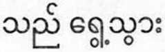'r© ”
o c
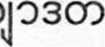o cr—c n c c c c c
OO0OO9:0j9: 339|[0OCD9GOO933GI OOOOOjX) 0jOO0JGOj9G]COG]9GOO9C
c o r-c ci—* c n. o c c c co c r or
009
°K°? gCGc0OC[f2f§o" 306009 OOCSC 0000009:000^0 CTjj0000[O[
CCo c cco oc c cc
600933^9000000 6O9:GOJ9GQ6]€]| Q^00G006J9GOSC00^°oll
C0 0000G0G009 OOIGJOOOOGOOOC 00C33G OQ9GOOSCOlOOpOII OOCCDOOOC b L J O LJjI OoL Li. • t L
ooooooocoodoc OOOOGOCOOSGOOOOOGOCO 000330000 OOljOCOOOOGOJOO Lj 0 L L * O 04 L IL L
ooiiooopo GooGoooo1ooooGOoooopooloo61oopSii ooiiooooopo coop:
oJ l L_L L Lj L_L oJ l l_L fl <4
co c n c c o —’ c c c
339: 9O09C0J0:09CO ^9:C\Dj300OG099GOIO0G339C 09£OGO:|ODOOgOl! 6OJ&U
c * o c r- n n c cc c#o c ccoon
32090 09 00C339:G 09 0910901 0009)132090 00CD CO: C0|§O00Q3Ol
LL l “ Lj Lj LL LLlLLoJl l
ooi£o339:|ofgo:o1ii Goo|:c’:0|9:o9coco1oopoii 04 l Lj T mlmo LL
c»oaoc33G[ro9c:33GpQj9:cD 330009^00000 (www.watchtower.orgj
cococ r—c onocc
oocooooocooooooocoos oc goo ooloooopjii
• L L Lj ’ o. J | ' L—.
Dii Hane’ T’aa Shppdi Yinilta’
Kwee naaniyahigii ayoo baa shil hozhQ. Azh£ shff doo nihizaad t’aa’aheelt’eeda ndi, t’aa aanii nihil bee-dahoozingo ei nihe’iina’ bee bich’i’ ahdahaazt’i’fgh t’66’-ahaydf. Ei biniina lahgo hazho’d nandideeshkil nisin: Haa’idash^.’, ajoodla, ach’f nahwii’na, dah haz’£, anooneel adin silfj’di hininaadooish ninizin?
Kwiininizin daat’si: ‘L4 shjf; ndi, t’aash bohdneedz$?’ Aoo’, t’aa aann! T’aa By Jehovah, Ts’ida Alaahdi Bidziilii God, yee adee haadzii’, t’aadoo hodina’i kot’eego yee hwiidool’aal. Diyin Bizaad am, God ei kot’eego bila’ash-dla’ii ya’a’dooliil: “Dabinak’eeshto’ t’aa’altso ya yidoot’ol, anine adin doo, aadob atinahodindleeh adin doo, aa-doo cha adin doo inda adiniih adin doo, haala al-tseed$£’ daholon^^ bil yoo’ahooya.”—Revelation 21:3, 4.
Dii saad t’aa’aann bohoodzaago doolado’ sh{j iina baa hozhQQ doo! Akosh^’, dii naasdi bee ha’oodzfi’ bee rida’dooldjilign, haash yit’eego ni doo nighan haz’anigi bohoneedz££go adfilnl? Diyin Bizaad baa hane’ bi-naaltsoos hadadiilne’fgii bits’££d66 nil beehodoozjjl. Na bineeshdlfigo dii naaltsoos t’aa ni nizaad k’ehji ak’e’eshchinigii la’ nadeestsoos.
Shi ei Jiihovah Yadahalne’i la’ asht’f. Diyin Bizaad dine yik’idi’dootjligi bika’aneijah. Shizhi’* bee nil ho-deeshnih, aadoo nidd’ neehodeesyl# nisin. T’aa haii-da aldo’ dii naaltsoos deiidoolta, ako t’aa shpQdf shaa ridiiltsoos. Ntsaago ahehee’?
△ Internetgi (www.watchtower.org) t’&& ni nizaad k’ehji dii hane’ la’ bik’ind^diniitA^l.
dMI^dl^dd MI33I dl^l IdMI^ktqkft
W Rjf RAR qiqfk qtqq ’TWT --WRH $ qk
m mt mr q^> m k I m<WJ| q Rrmri W Hc-R Uui m qt?q T||^: k aW WT, q>Rjdl£ T ftq-WTR cRTT tk^d q^q mmi m qi^4i?
FHTf TW km ‘3pm x| | ?F k kt THm VJ?’
3pm TPm $! q^lftbm RW ^RRT WmA mft 3Twn krt qkr qfm q^qqkt $ l w^mt Hifamifakt errfr k j14^ «n$M<yi<’i mt ms:
“smt fkftmn kl^ldie 3TRT T kfr mj
ikkr l aft qter kft kk i=kk I qf^rr ^rr-
^fkkkqqml”—qqq^r??:?, y.
eft dl4dRl<+>dHI Mlkld |^T?TRqfaSIM^Hq
ctxAMI k <FT ^T? T dMI^bl qftqW mt qffm Jiftqcbl 'Hkmi arrmmrq 414*^ ^krmft qqqq qk qfkqj? aqrkr wp, nqqf^iq qk
qirnr ■•HiUmi qnq I dMi^ ^nqpn wr 5i^r-m q ^ftm vqi^k^ l
q qq> mr q^kiki qr§ft 11 mt ^q qrfaq-
m? qqq fkk I q aqr^n^ qft qn * -sidiaw srfk q qk qqrtqftqn # 3omim^T^>rTWW kq qrfk aw^ qk qm q^ l mrqr^ vj Ia
A ^SrkqT (www.watchtower.org) dMI^eA ShM*! qimi*iI sft qFT-wftMU^Wl
Det var hyggelig a treffe deg. Selv om vi ikke snakker samme sprak, er vi sikkert enige om at det er mange problemer i verden i dag. Derfor vil jeg gjerne stille deg et viktig sporsmal: Kunne du tenke deg 4 leve i en verden der det ikke finnes hat, lidel-ser og sykdom og ikke engang dod?
Du tenker kanskje: «Det er klart jeg kunne det, men det er vel ikke mulig?» Jo, det er det! Den Allmektige Gud, Jehova, har lovt at han snart skal sorge for at det blir en slik forandring. Bibelen sier dette om hva Gud skal gjore for menneskene: «Han skal torke bort hver tare fra deres oyne, og doden skal ikke vaere mer; heller ikke sorg eller skrik el-ler smerte skal vaere mer. De ting som var for, er o
forsvunnet.» — Apenbaringen 21: 3, 4.
Tenk hvor godt det vil vaere a leve nar dette loftet blir oppfylt! Men hvordan kan du og familien din fa en slik framtid? Du finner svaret i den bibelske litteraturen vi utgir. Jeg kommer gjerne tilbake med noe som du kan lese pa ditt eget sprak.
Jeg er et av Jehovas vitner. Vi hjelper andre til 4 forsta Bibelen. Du kan fa navnet mitt*, og kanskje jeg kan fa navnet ditt#. Hvis du gir meg denne brosjyren igjen, kan jeg vise den til andre ogsa. Takk?
A Pa Internet! (www.watchtower.org) kan du finne mer infer-masjon pa ditt eget sprak.
Xan ci lacda teeth elag ke ybb can jek. A cage mi /can ruac ke thok kel ba, duunde ybb yan kane ji gacne Je en yob ciag teeka eme ce thiaag ke rik ti guan. Ke kui ema, yan gbbra yob bi thiec: Jin nhaki je i bi cieg guath mi thil liaa, ka thil juey, ka thil nyier kene rik diaal tin te rey yaaa eme?
Dag nhaki je i bi cieg guath mi gaaa: ‘Kue la ybb, dere raade lot i deri cieg guath mi thil rik tata?’ Xaan, ruac ema dere raade lot epuc! Taame ci Kuoth in leny buamde ti diaal ni Jabba je lar i be cieg ti gaw nbbg ke guaath mia beeni. Ka nene je ci Baibol lat in ba lat e Kuoth ke kui nath lar, min wee i: “Ka be mer nyinkien diaal poc. Ka be cu thil liaa, kene par, ke wiee, kene bee puany, ke ybb ci gaaani tee kan thuuk.”—Nyuuth Jaan 21:3, 4.
Kue le met car yen, bi ciag teeka tee idi mi wa ruac Kuath ema wa ben ala thuak! Ka jin, yene ji gaaalu dere je kule gac idi en ybb bia te rey ciegni ti gaw tin ba nbbg e Kuoth? Bi thiec eme jek rey buak in la giecke ni naath e Neen Jabba ke ybb ba Baibol gac. Xan bi lacda teeth elag ke ybb bi nbbg bok mi ca gar ke thokdu.
8 yan ram kel ka Neen Jabba. Kan luaka ni naath ke ybb ba Baibol gac agaaa. Xan bi lar ciotda*, ka gbbra ybb ba cidtdu# gac ba. Mi nhaki je lueni ya bok eme ke ybb be wa nyuath ney kakien ba. Ci lacda teeth elag ke ji?
△ Guic In-ter-net (www.watchtower.org) bi ruaacni ti guan wa jek thin ke thokdu.
Mi ta masha kontentu di topa bo. Ounke nos no ta papia e mesun idioma, sin duda nos tur dos ta di akuerdo ku bida ta yen di problema. P’esei, lo mi ke hasi bo un pregunta importante: Lo bo tin gana di biba den un tempu ora ku lo no tin odio mas, ni mi-seria, malesa i ni sikiera morto?
Kisas bo ta pensa: ‘Klaru ku si! Pero esei ta po-sibel?’ Si, e ta posibel! E Dios todopoderoso, Yeho-va, mes a priminti ku pronto lo e hasi esei. Beibel ta bisa lo siguiente tokante loke Dios lo hasi pa huma-nidat: “E lo seka tur lagrima kita for di nan wowo; i lo no tin morto mas; lo no tin lamento mas, ni yora-mentu, ni dolo; e prome kosnan a pasa.”—Revelashon 21:3, 4.
Djis imagina kon felis bida lo ta ora ku e palabra-nan ei bira realidat! Pero kon bo por hasi sigur ku abo ku bo famia lo disfruta di e futuro priminti aki? Bo ta hana e kontesta den e literatura bibliko ku nos ta publika. Gustosamente lo mi buska un publi-kashon pa bo den bo idioma i trese pa bo.
Mi ta un Testigu di Yehova. Nos ta yuda hende kompronde Beibel. Lo mi bisa bo mi nomber* i tam-
be lo mi tin gana di sa bo nd di duna mi e foyeto aki bek ya asina mi por laga otro hende tambe les’e. Masha danki?
ber#. Sea asina bon
△ Riba Internet (www.watchtower.org) bo ta hana mas infor-mashon den bo idioma.
64 PAPIAMENTO (Curasao)
oLuK ^1 Ij
<2) L>& IL^- L^w wLaA_> Lj I ♦ owX-& Ij^,,^ Lve ^xJL^*-
aj c^Ah CjIc^LI j (www.watchtower.org)

Bardzo proszt? o przeczytanie ponizszego tekstu
Ogromnie si$ ciesz$ z naszego spotkania. Chociaz mowimy roznymi j^zykami, na pewno Pan (Pan!) tez do-strzega, ze zycie jest peine problemow. Ale czy nie chcielibysmy zyc w czasach, gdy nie b^dzie juz niena-wisci, biedy, chorob, a nawet smierci?
Bye moze powie Pan (Pani): Oczywiscie, ale czy to w ogole mozliwe? Owszem, to jest mozliwe! Sam Bog Wszechmocny, Jehowa, obiecal, ze Juz wkrotce do tego doprowadzi. Pismo Swi^te, Biblia, tak opisuje, co Bog uczyni dla ludzi: „I otrze z ich oczu wszelk$ lz$, i smierci juz nie b^dzie ani zalosci, ani krzyku, ani bolu juz nie b^dzie. To, co poprzednie, przemin^lo” (Objawienie 21:3, 4).
Prosz$ sobie wyobrazic, jak wspanialy b^dzie swiat, gdy te obietnice si$ urzeczywistni^I Ale jak Pan (Pani) moze wraz z rodzin$ doczekac si$ ich spelnienia? Odpowiedzi udzielaj^ wydawane przez nas publikacje oparte na Biblii. Z przyjemnosci^ dostarcz^ Jakies wydawnictwo w Pana (Pani) j^zyku. ■ ■
Jestem Swiadkiem Jehowy. Pomagamy ludziom zrozu-miec Bibli$. Chcialbym powiedziec, ze nazywam si$* A czy moglbym poznac Pana (Pani) godnosc#? Uprzejmie prosz^ o zwrot tej broszurki, zeby jeszcze inni mogli z niej skorzystac. Serdecznie dzi^kuj^?
△ Wi^cej informacji we wlasnym j^zyku moze Pan (Pani) znalezc pod adresem internet www.watchtower.org..
_
E um prazer encontra-lo. Embora nao falemos a mesma lingua, sem duvida concordara comigo que a vida e cheia de problemas. Assim, deixe-me fazer uma pergunta importante: Gostaria de viver num tempo em que nao havera mais odio, dificuldades, doenqa, nem mesmo morte?
Talvez voce pense: ‘Sem duvida, mas sera que isso e possivel?’ E, sim! O proprio Deus Todo-Poderoso, Jeova, prometeu que ele logo estabelecera essas condi-qdes. A Biblia diz o seguinte a respeito daquilo que Deus fara pela humanidade: “Enxugara dos sens olhos toda lagrima, e nao havera mais morte, nem havera mais pranto, nem clamor, nem dor. As coisas an-teriores ja passaram.” — Revelaqao (Apocalipse) 21:3, 4.
Imagine so como a vida sera maravilhosa quando essas palavras se cumprirem! Mas o que voce precisa fazer para, junto com sua familia, ver o cumprimento dessa promessa? Encontrara a resposta nas publica-Qdes biblicas que produzimos. Ficarei feliz de conse-guir uma publicaqao no seu idioma e traze-la para voce.
Eu sou Testemunha de Jeova. Nos ajudamos as pes-soas a entender a Biblia. Eu vou the dizer o meu
no
e* e gostaria de saber o seu nome# tambem. Por favor, devolva-me este folheto para que outros tambem possam le-lo. Muito obrigado?
△ Na internet (www.watchtower.org), voce encontrard mais informagoes no seu proprio idioma.
PORTUGUESE 67
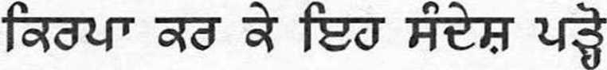refe! ssre ffarr fa sss yfat fafat fai wz nsre refa ssfat fafat fet' fefafat, US fe fete & tfa sfaf fe re?J Htfa-H3 fafafat tfa fe-fag Ifatedll HTTSre res fet fafat fal fen Trot fef 3ste ffe Hsfat HreH fagre refafa S7: fa reft fefe fefef7 refa nfat few & fan tfas re 6^33 fafasft, re fatet yfafe, re fatrest, tufa res tfa fe fa fat rere-i ns fas7 refaui7? ^x
3fa H'fati faf: fa, nfa fan few sfa fa ffesft refafa S3, ns fa feu wfe fa?’ fa fa, feu tfarror? wfe fa PdQ'Ps ^X *
H d H H S JI H’S fetes fered fa Mt7 retire fate7 fa fa fe HSS WX *“X ^X ^x
rffat fat»F £ d'M'3 HC^dl'l fa S7 Iffafa nw? fa fare7 S' fa fafa fa- Trot fa 3ITO7 S: ‘fa fatfa faftfa § fafa W Pffar fa ere Murfa s fa re Sfaft, re mew7 s far re fa re far Sfari fafafa afa Hrefar fatfa—-raren ^x
fafat 21:3, 4.
sre fa fa fa fa ^re7 w Sfar, re fat ffa> w ^X
fafa! ys nrerj far fa fa I fa fafat fat ttresft <rfa ^X
Trot fa fa fa fares 3 fa ^rres fa fa S? # reft' fa, ^x
re fat sj'fa rere fa far fere frere rere fa $ yfags fa fen nren re rrere tfafti
fat' fares $ sires fa fa fat fates $ rere fa fcfar KX
fare rerere tfe fare fat Hree fat fai fare re*t, 3drre re* fat fa? tfaren rer fa fafa fes tfares revs fa fefa, reffa reifa fan fat fen § tr^i 3rere nss if<srefe
a sfe mfet sre7 fes ffafere fa fas resreSt fe retet fai (www.watchtower.org)
68 PUNJABI (Gurmukhi script)
Ma bucur sa va cunosc. De§i nu vorbim aceea§i limba, fara indoiala atat eu, cat §i dumneavoastra suntem de acord ca viafa este plina de probleme. De aceea vreau sa va pun o intrebare importanta: V-ar placea sa trait! intr-o lume in care nu vor mai fi ura, necazuri, boli si nici chiar moarte?
Probabil ca va ganditi: „Bineinteles, dar este posibil a§a ceva?“ Da, este posibil! Insu§i lehova, atotputer-nicul Dumnezeu, a promis ca va instaura in curand aceste conditii. lata ce ne spune Biblia despre ce va face Dumnezeu pentru omenire: „Va §terge orice lacri-ma din ochii lor, §i moartea nu va mai fi; nici j ale, nici strigat, nici durere nu vor mai fi. Lucrurile anterioare au trecut“. — Revelafia 21:3, 4.
Imaginafi-va ce viafa fericita vor avea oamenii cand aceste lucruri vor deveni o realitate! Insa cum putefi sa va asigurafi ca atat dumneavoastra, cat §i familia dumneavoastra vet! avea parte de acest viitor? Raspunsul il putefi gasi in literatura biblica pe care o tiparim. Mi-ar face placere sa va aduc o astfel de publicatie in limba dumneavoastra.
Fac parte din organizafia „Martorii lui Iehova“. Noi ii ajutam pe oameni sa infeleaga Biblia. Va voi spune ele meu* §i as dori sa aflu §i numele du voastra#. Va rog sa-mi inapoiafi aceasta bro§ura pentru ca §i alfii s-o poata citi. Va mulfumesc mult.A
A Ve£i putea gasi mai multe informatii in limba dumneavoastra pe Internet (www.watchtower.org).
IIpOHHTaiiTe, noHcajiyiicTa, □Ty HH(|)opMaqHio
H ohchb pa# BCTpeae c BaMH. Xoth mbi c bhmh roBopnM Ha paaHbix H3BiKax, Mbi HaBepHHKa coh-/jeMCH BO MHeHHH, HTO 2KM3HB HOJIHa npo6jieM. HO3-TOMy h xony aa^aTb bbm bbtkhbih Bonpoc: xotcjih (5bi Bbi jkhtb b TaKoe BpeMH, Kor/ja dojiBme He Sy^er HenaBHCTH, HyjK/jbi, 6ojie3Hen h /jarae CMepTH?
Motkct Gbitb, Bbi no/jyMajin: «Kohchho! Ho bo3-mohcho jih oto?» /Ja, bo3mojkho! BceMorynjHH Bor, HeroBa, caM odenjaeT, hto CKopo co3AacT Tanne yc-jiobhh. B BhSjihh roBopHTCH o tom, hto Bor c/tejiaeT fljia juo/jen: «OTpeT oh BCHKyio cjiesy c hx rjias, h CMepTH yace He 6yn;eT, hh ckopGh, hh bohjih, hh Sojih y>Ke He Sy/jeT. Hpeamee nponuio» (OTKpoBe-hhc 21:3, 4).
Tojibko npe/jcTaBbTe, kbkoh cnacTjiHBOH SyneT H£H3Hb, KOr/ja HCnOJIHHTCH 3TH CJIOBa! Ho HTO BaM HyjKHO /jejiaTb, htoGbi bbi h Barna ccmbh jkhjih b npe-KpacHBix ycjioBHHX, KOTOpBie odenjaeT Bor? Otbct bbi HaH^CTe b 6h6jichckoh jiHTepaType, KOTopyio mbi H3/jaeM. H 6yay pa# HaiiTH #jih Bac jiHTepaTypy Ha BanieM H3BiKe h npnHecTH ee BaM.
H Cbh/jctcjib HeroBBi. Mbi noMoraeM jiio/jhm no-hhtb BhGjihio. H cooGiijy BaM Moe hmh*, TaKHce a xo-Teji 6bi y3HaTB Baine hmh#. BepHHTe, no?KajiyncTa, MHe 3Ty dpomiopy, hto6bi ee MorjiH npoHHTaTB h £pyrHe. BojiBinoe BaM cnacH6oA.
△ Bojibine Ha BaineM H3biKe Bbi Han/jere b Mh-
TepHeTe (www.watchtower.org).
Faamolemole ia Faitau Lenei Fe‘au
Ua ou flafia lava e feiloal ia te oe. E ui lava ta te le tautatala i se gagana e tasi, ae e mautinoa ta te tau-fai ioe uma ua faatumulia le olaga i faafitauli. O lea la, ou te fia fesili atu ia te oe i se fesili taua lava: Pe e te fia soifua i se soifuaga e le toe iai le feitagal, ni fai-gata, o mai e oo lava i le oti?
Atonueteonotomanatuefaapea: ‘Outemanaoiai, ae faamata e tupu moni lenei mea?’ Ioe, e oo moni lava! Ua folafola mai e le Atua Silisili ese o leova, ua toe nei o se aga ona ia faataunuuina lea o na tulaga. Ua ta‘ua i le Tusi Paia le mea o le a faia e le Atua mo le fanau a tagata i le faapea mai: “E soloiesea fo‘i e le Atua loi-mata uma i o latou mata; e leai fol se toe oti, po o se faanoanoa, po o se aue, e leai fol se toe puapuaga; aua ua mavae atu mea muamua.”—Faaaliga 21:3,4.
Sei manatu i se soifuaga fiafia o le a iai pe a taunuu nei upu! Peital, pe faapefea ona e faamautinoa o le a olioli lou aiga i se lumanal matagofie faapena? O le a e maua le tali i tusi faale-Tusi Paia ua matou lomiaina. Ou te fiafia e aumai se tusi mo oe i lau lava gagana.
O a‘u o se Molimau a leova. O loo matou fesoasoani i tagata ia malamalama i le Tusi Paia. O le a ou faailoa atu lo‘u igoa*, ae ou te fia iloaina fol lou suafa#. Faamolemole toe tauaao mai le tamal tusi lena ia te a‘u ina ia faitau ai fol isi. Faafetai tele lava?
△ O le a e maua nisi faamatalaga atili i lau lava gagana i le Initineti (www.watchtower.org).
Mojimm Bac fla npOHHTaTe OBy nopyny
BeoMa mh je /jparo ihto caM sac cpeo. HaKO He TOBOpHMO HCTHM je3HK0M, HeMa cyMite #a ce h bh n ja cjiajKeMO fla je tkhbot nyn npo6jieMa. 3aTO tkcjthm ah BaM nocTaBHM je/3,Ho BaiKHo nHTafte: fla jih 6ncTe tkcjicjih /ja jkhbhtc y CBeTy y KojeM He 6h BHme Shjio Mpme, naiuH, 6ojiecTH, na naK hh CMpTH?
MojK^a mhcjihtc: ’HapaBHO, cbmo, ^a jih je to Moryhe?‘ fla, Moryhe je! CBeMohHH Bor, JexoBa, jihhho je odehao /ja he ycKopo ocTBapHTH TaKBe ycjiOBe. Ebo nrra BnSjinja Karae #a he Bor yHHHHTH 3a HOBenaHCTBo: „Oh he oSpHcara cBany cysy c ibhxobhx onHjy, h cmpth BHme Hehe 6hth, hhth he BHiue 6hth Tyre, hh bhkc, hh 6ojih. npefjamite CTBapH npoljome“ (OTKpHBerbe 21:3, 4).
3aMHCJiHTe eaMo kbko he hchbot 6hth Jien Ka#a ce oBe penH 6yay HcnyHHJie! MetjyTHM, kbko bh h Barna nopo/jnija mojkctc to ^ohchbcth? O/jroBop here Hahn y SnSjinjcKoj JiHTepaTypH Kojy o6jaBJby-jeMO. Bnhe mh Aparo /ja HaSaBHM HeKy nySjiHKa-ijHjy Ha BameM je3HKy h £a BaM je AOHeceM.
Ja caM JexoBHH cbc/jok. Mh noMajKeMO jty^HMa Aa pasyMejy BnSjinjy. Pehn by BaM Moje HMe*, a BOJieo 5hx ,o;a 3hbm h Baine hmc#. Mojihm Bac mh BpaTHTe OBy 6pomypHuy kbko 6h h ApyrH mo-tjih /ja je nponHTajy. IlyHo BaM XBajia.A
△ Ha HHTepHery (www.watchtower.org) motkctc Hahn Bnine HHcjJOpMaiinja Ha BameM je3HKy.
n
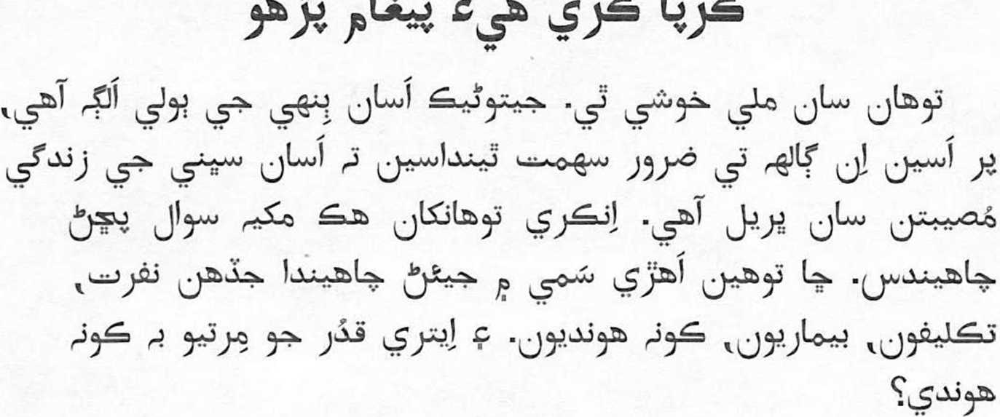
. tj3 (www.watchtower.org) ci_>*
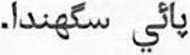253<O^32530 22^88)62 z6c5©25fc3
©6)8 63g0® ©0 633 23233O2©. ©6)8 ®®8 ©253® 639^98 2532539 ©2539253025^, 8825322 63i©g8g253& 8309 26©2225383 2622253 ©253 0 ^3 ©qzste)® ©253 63 ©8253 6)00 253© 268 2212532225$ 2537,207,. d 26229, ®® 09238 ©©6)25$ 87.^6326 96$25322 25$ ^6325$253: ©©8022, 253 ®253© ©3 g 2263 02326© ©®25$® ®0<£>22 33 ©3 2537.26 2539©0253 88253 ©8253253 ©6) 2537 ® 26q?
©6)0 23®63O8© 0®©63® 63 ©253 8. ‘^78 253t.253©253, d25$ d253 ©®25$253 ^0825$ ©^2225$^?’ ©0, e^25$©25325$®! ©8726 £3253822253 063cJ® ©630253253 6)0 23©86)0CJ38 ©^8 ©22©63cf83®8 ©©9©Oa25$g ©0(39 26©C225$©25$. ©^8 ©28239 ©8©]©825$ ^)^8©8^ 2530253 ©c^ 63^253 6)86)002$ 0®063® 26g3253©3. “©£) ©§2©0© ^©O(g25^ 23|© 25)^<g2d© 823 ^©25^025^G3. ©d^oGSq 253©25^ ©2539©25^0253&C3. QiQ8~ ©q 63iS©q 0©q2539©q 253025^ 025398253025^25. 23(g§ ©<^8(^ 23638 80822.”—©§qd© 21:3, 4, NW.
02532© ^25309 6)0253253, 8 88253 25^6)^ ©8253 q8©8^ ©©3253 2530© §28©25^ 8§253 C22© (3i©6)8^! ©2539©639©g^6©3, ©239©O925^g 8 ^28 ©©© ^25396325322 ^25328 8^253253 ©6)025^, ©©6) ©§©0& 6p22©253 238825^ ©88 26229 ©do ©825^253 ©6)0 63<26 ©825^025^ 025390339©q? 38 230 S^0©3 6)86)(^ ©23925^ 2325^8^25^ ©6)0 8(§2^Oi 0t©6)B. ©©6)© 639^9©825^ 28©22253 ©2392532© ©6)0 ©63253^825^ ©<^25^253 ©© S3i©288.
®© ©22©634®3©6i 239^8^3O^8©3©632© ©253©2532©. 6^8 0253229© 6)86)022 eeO©6)4© ^306328253 0,2325390 ^3025383. ®® ©6)0 ©0© 253®* 2622^253®. d 0©8® ®©6) 253® # q;253 632©25325^ ®® 2S3i®288. ^30^^69^30 ©© ©23925^ 8°©22 Cp236^ ®0 ©^25^253. 8S3©2239® ^28s3 ^22©25^ ©® 23^8©22 '^228253253 2^0825^ ©88. ©6)0 ©6)3©639® 8^268.A
A ^282530830^252© (www.watchtower.org) ©80 ©©8® eoo^osDs© O7.8 O0S3d c6)92£)253 20^253.
Vel’mi ma tesi, ze sme sa stretli. Hoci nehovorime rovnakym jazykom, urcite sa zhodneme na tom, ze zivot je dnes piny problemov. No chcem Vam polozit jednu dolezitu otazku: Chceli by ste zit’ v case, ked uz nebude existovat’ medzi 1’ud’mi nenavist, nebudu ziadne tazkosti, choroby a dokonca ani smrt?
Mozno si poviete: ,Samozrejme, ale je take nieco mozne?‘Ano, je! Sam vsemohuci Boh, Jehova, sl’u-bil, ze coskoro nastolf take podmienky. O tom, co Boh urobf pre 1’udstvo, Biblia pise: „Zotrie . . . kazdu slzu z oci a smrti uz viac nebude a nebude uz viac ani smutku, ani kriku, ani bolesti. Predosle veci sa pominuli.“ — Zjavenie 21:3, 4.
Skuste si predstavit’, aky stastny bude zivot, ked sa tieto slova splnia. Co vsak mozete urobit’ pre to, aby ste sa aj Vy a Vasa rodina mohli tesit’ z tejto buducnosti, ktoru Boh sl’ubil? Odpoved’ na tuto otazku najdete v biblickej literature, ktoru vydava-me. Ak mate zaujem, zaobstaram pre Vas nejaku literaturu vo Vasom jazyku a prinesiem Vam ju.
Patiim k Jehovovym svedkom. Pom&hame 1’ud’om
porozumiet’ Biblii. Poviem Vam moje meno* a bude ma tesit’, ked’ aj Vy mi poviete Vase tuto brozurku mi vrat’te, aby si ju mohli precitaf aj d’alsi. Vel’mi pekne Vam d’akujem.A
ieno#. Prosim,
△ Na internete (www.watchtower.org) najdete d’alsie informa-cie vo Vasom jazyku.
Prosim, preberite to sporocilo
Veseli me, da sva se srecala. Ceprav ne govoriva istega jezika, pa se gotovo oba strinjava, da je danes zivljenje polno tezav. Zato vas zelim vprasati nekaj pomembnega: Ali bi radi ziveli v svetu brez sovrastva, trpljenja, bolezni in celo smrti?
Morda si mislite: ,Seveda bi, toda ali je to mo-goce?‘ Da, Je mogoce! Sam vsemogocni Bog Jehova obljublja, da bo danasnjim razmeram kmalu na-redil konec. O tern, kaj bo storil za clovestvo, pise v Bibliji naslednje: »Obrisal bo vse solze z njihovih oci in smrti ne bo vec, pa tudi zalovanja, vpitja in bolecine ne bo vec. Kajti prejsnje je minilo.« (Razodetje 21:3, 4, SSP)
Sarno predstavljajte si, kako srecno bo zivljenje, ko se bodo uresnicile te besede! Kaj pa lahko storite, da bi skupaj s svojo druzino doziveli to obljubljeno prihodnost? Odgovor boste nasli v biblijski literaturi, ki Jo izdajamo. Z veseljem vam born prinesel publikacijo v vasem jeziku.
Sem Jehovova prica. Ljudem pomagamo razu-meti Biblijo. Povedal vam born svoje ime*. rad pa bi tudi vedel, kako Je vam ime # Prosim, vrnite mi to knjizico, da bodo lahko iz nje brali tudi drugi. Iskrena hvala!A
△ Vec informacij v svojem jeziku boste nasli na internetu (www.watchtower.org).
Es un placer conocerlo. Aunque usted y yo no ha-blamos el mismo idioma, sin duda los dos coincidi-mos en que la vida esta llena de problemas. Por eso, deseo hacerle una pregunta importante: ^le gustaiia ver el dia en que desaparecieran el odio, las dificul-tades, las enfermedades e incluso la muerte?
Tai vez piense: “Claro, pero ^es eso posible?”. Si, lo es. El Dios todopoderoso, Jehova, ha prometido que pronto se encargar^ de que asi suceda. La Biblia explica de este modo lo que hara por los seres huma-nos: “Limpiara toda lagrima de sus ojos, y la muerte no sera mas, ni existir^ ya m&s lamento ni clamor ni dolor. Las cosas anteriores han pasado” (Revela-cion [Apocalipsis] 21:3, 4).
Imaginese lo feliz que ser& la vida cuando esas pa-labras se hagan realidad. Pero ^como pueden usted y su familia disfrutar de ese futuro prometido? En-contrar^ la respuesta en las publicaciones biblicas que nosotros editamos. Con mucho gusto puedo con ■ ...... .. ..... .....
seguirle una publicacion en su idioma y traersela.
Soy testigo de Jehova. Mis companeros y yo ayu-damos a la gente a entender la Biblia. Le voy a decir mi nombre* y quisiera saber cu&l es su nombre#.
Devuelvame, por favor, este folleto para que puedan leerlo otras personas. Muchas gracias?
△ En el sitio de Internet www.watchtower.org encontrara m&s informacion en su idioma.
Nimefurahi sana kukutana nawe. Ingawa hatuzu-ngumzi lugha moja, bila shaka utakubaliana nami kwamba kuna matatizo mengi maishani. Kwa hiyo, ni-ngependa kukuuliza swali muhimu: Je, ungependa kuishi wakati ambapo hakutakuwa na chuki, magu-mu, na hata magonjwa na kifo?
Huenda ukasema: ‘Bila shaka, lakini je, hilo linawe-zekana?’ Ndiyo! Mungu mwenye nguvu zote, Yehova, ameahidi kwamba hivi karibuni ataleta halt hizo. Bi-blia inasema hivi kuhusu mambo ambayo Mungu ata-wafanyia wanadamu: “Atafuta kila chozi kutoka katika macho yao, na kifo hakitakuwapo tena, wala maombo-lezo wala kilio wala maumivu hayatakuwapo tena. Mambo ya zamani yamepitilia mbali.”—Ufunuo 21:3, 4.
Hebu wazia jinsi maisha yatakavyokuwa yenye fura-ha maneno hayo yatakapotimizwa! Hata hivyo, unawe-zaje kuwa na hakika kwamba wewe na familia yako mtafurahia wakati huo ulioahidiwa? Unaweza kupa-ta jibu katika vichapo tunavyochapisha ambavyo vi-nategemea Biblia. Ninaweza kukuletea kichapo katika lugha yako.
Mimi ni mmoja wa Mashahidi wa Yehova. Sisi hu-wasaidia watu kuielewa Biblia. Nitakwambia jina langu* na ningependa kujua jina lako# pia. Tafadhali nirudishie kijitabu hiki ili wengine pia waweze kukisoma. Asante sana?
△ Unaweza kupata habari zaidi katika lugha yako kwenye Intaneti (www.watchtower.org).
Jag ar glad att fa traffa dig. Aven om du och Jag inte talar samma sprak, ar vi sakert overens om att livet ar fyllt av problem. Darfor har jag en viktig fraga till dig: Skulle du vilja leva i en tid da det inte langre finns hat, svarigheter och sjukdomar och da till och med doden ar borta?
Du kanske tanker sa har: Naturligtvis, men ar det verkligen mojligt? Ja, det ar det! Den allsmaktige Guden, Jehova, har sjalv lovat att han snart skall ratta till forhallandena. Bibeln sager foljande om vad Gud kommer att gora for manniskorna: ”Han skall torka varje tar fran deras ogon, och doden skall inte finnas mer; inte heller skall sorg eller skrik eller smarta finnas mer. Det som en gang var ar borta.” (Uppenbarelseboken 21:3, 4)
Tank sa underbart livet kommer att bli nar de har orden blir verklighet! Men hur kan du forsakra dig om att du och din familj far uppleva en sadan fram-tid? Du kan finna svaret i den bibliska litteratur som vi ger ut. Jag skaffar garna litteratur at dig pa ditt eget sprak och kommer till dig med den.
Jag ar ett Jehovas vittne. Vi hjalper manniskor att garna vilja veta ditt namn#. Jag vill garna ha till-baka den har broschyren, sa att andra ocksa kan fa lasa den. Tack sa mycket.A
fdrsta Bibeln. Du skall fa
itt namn*. och jag skulle
A Pa Internet (www.watchtower.org) kan du fa mer information pa ditt eget sprak.
Pakisuyong Basahin ang Mensaheng Ito
Natutuwa akong makausap ka. Bagaman magkaiba ang ginagamit nating wika, tiyak na pareho tayong sumasang-ayon na punung-puno ng problema ang buhay. Kaya nais kitang tanungin ng isang mahalagang tanong: Nais mo bang mabuhay sa panahon na wala nang pagkakapootan, kahirapan, sakit, at maging ng kamatayan?
Baka isipin mo: ‘Siyempre naman, pero posible ba iyan?’ Oo, posible ito! Ang mismong Diyos na maka-pangyarihan-sa-lahat, si Jehova, ang nangako na malapit na niyang pangyarihin ang gayong mga kalagayan. Ganito ang sinasabi ng Bibliya na gagawin ng Diyos sa sangka-tauhan: “Papahirin niya ang bawat luha sa kanilang mga mata, at hindi na magkakaroon ng kamatayan, ni ng pag-dadalamhati o ng paghiyaw o ng kirot pa man. Ang mga dating bagay ay lumipas na.”—Apocalipsis 21:3, 4.
Isip-isipin na lamang kung gaano kaligaya ang buhay kapag natupad na ang mga salitang ito! Gayunman, paa-no mo matitiyak na tatamasahin mo at ng iyong pamil-ya ang ipinangakong kinabukasang ito? Matatagpuan mo ang sagot sa mga literatura sa Bibliya na inilalathala na-min. Matutuwa akong ikuha ka ng publikasyon sa iyong sariling wika at dalhin ito sa iyo.
Isa ako sa mga Saksi ni Jehova. Tinutulungan namin ang mga tao na maunawaan ang Bibliya. Sasabihin ko sa iyo ang aking pangalan* at gusto ko ring malaman ang pangalan mo#. Pakisuyong isauli sa akin ang buklet na ito para mabasa rin ito ng iba. Maraming salamat sa iyo?
△ Sa Internet (www.watchtower.org) ay makasusumpong ka ng higit pang impormasyon sa iyong sariling wika.
d^UJ<Sl|GldFlLI^J 6MrrffllL|J5J<S6ir
2JhJ&&D6TT &f5$&)&)$<oV QlJITLCU ^pG^ITapUD. GTSiTG^jaDL^lLJ U/TGWap Gsupj, urranap Gajpi. guild, guitlpGgg)3uGgv
filanpiLj ^(tyLju&n^ f^rrib ^@gm@Gld g^p^GG^^git
Gairrib. ^^g^itgv, prrGsr 2JEi<9;6'fflL_p5$6M g?@ (LpGGllhdftgxt G^GbraGGaiu G&lL& aGp^LDLjGlGpGr: uaa&Gujrr ^gstuGldit, gjggt GpirGuirr 3nGanr #h.L_ ^ajGV/rp GppF, arrsv^jglGU surrtp fiG>i pp)Ga3ULiGGpbT3Grrrr?
irrp,rrGfT ^Gsrrr ^Q^aJGvrrLb pi^GGp 'SrrrfluJLorr?’
gtggt sp^GsuaDsiT fiGiaarr (GauL&Gvmi). ^g^gihlduGIgv pi—Ga^ prrGGT Gurrffipgj! 6jQG$rGirprT6V ^ljul^uulLg i^gidgvg^ldgidili GGGrjp $gv Qarr&MrG ajijuGurrajprT^ s=rrai aioVGUGauD ljgg>l_^3j ai—GyanrrtGuj GiuGarrGurr surrG^pj^ G3trr®£$@Gffiprnr. LDGtifigp/pGarra ^l^g^gtt gtGtggf Qsfujiulj Gt jrrGprnr gtggtljgg)3) anuiGGr ^uuup Q^-rrGGp^j: “^Gurra^^^uj &6mr6tfrfprT uirrGaGuiLiw GpjajGr ^anu.LJidrrn; ldft G^fT(LpuGaJ<aF>GV, gJ<i&(ipijG6VGinGV, ^GVpipiG\)!L1G6VGV)GV, GM(n^^(LpiG)16VGti)GV; (Lpp^G^rG^Gu^Grr spL^jj^jGLjrruGaFT.”—QajGxbuuG:S^I3)GV 21:3, 4.
ajrrG^pj^ iGanpGajpjijDGurr^j ajprupGaa^ GTaiaisrTFp ^pGprr 6i^Lorr& GTssrpj Q&rTt&j&Lb ^pi ianaiT Q^uj^j urr^G^GafTGr’.
^ijuLpiunrG^TtTGV, rfjm&tffnjLb 2jTjj&((>n)<5iDi—UJ @@LbLd(yiuD ^l'iu^ uuGi^ GurripFGaa^Gauj ^Gpiuaflfr&i wGip ioTgstgvt Q^ujuj GGUGm^Lb? ^&j[b arrasr LJ^aaGV prnti^Grr lGij^GG^i'jd g^ulGgtt ^Lbup^uuL-L- LGrj-^ijibj 36rflGV ^ihJ^Grr ULpG>Gb! G^rrGfTGTFoVrnh. ^i—GO)Gu su^ib
Gun^J, S-f5Ja(GT^6^L_UJ UlTGMGqiltfKGGvGlLJ 6p(fT, GanFGSSTg)
Giipgj ^(n^GpGr.
prrGsr 6p(ri) G'uiG^'iaiaabGi &rrLJffl. sainGaaai qrflp^jQ^rrGfTGTT gtgv GOFT^^^lb piTiEJ^GfT ^pja^GGpnLJD. <oT6ir6t)J<olDL_UJ QuiLlfr* GTG9TG9T GrGruaDp Q^tTGvGGp^T, QuiuG** gtgstgvt gtgstljg^^
Q^rflp^Garr6W5n6ViTLDfT? wppGuir^^ii) £g)G&)<% 6nrrffluij^p^rr<x, piuaj G&liipp ^4)3)G £)gy ip4)^)3,4,Gap, £TG5T61rflL_GLD ^(TfjUlGG) 3j3(I1)G.3Gt. Grrrrwu pGsrpG).A
Sh ^^SVITOTT oUo^]iU lil 5rJ5)oTT 2_r5Ja(6YT)OT)L_UJ Col^lTrB^ LjrT57D31^11^513 ^<3dTl_IT QjhL-upeb (www.watchtower.org) arrOTJTajrrib.
epS s’dS^ooo^p, ^Ddo SSoSge^5 So6 606S SScdpS^ S£p)o<5 dporp SoSo gjS^odoo&pSoo. ssodoS SSo SoSo^e)^2^ ^Sooaog^oS
[£>$> s^rpeoSodbo&o^So. e>SodooS: Se&o, dSo, oL ©C OJ CD
a'gQ, OJS6&
Jfotfrao &’<3’ 60CSX) s’ooeS4 ^2o-t6ra’3§ SoOJa^^eyo’?
CD
‘^o-S^dorp s$S66^pSo, s°S ££>S) S’Sg 60S) doo
?’ £?S
Sodb ese?6-u)Soo6S-do^. €$6 a)Sg)dorp S’6gSoS)doo6! SdgddSoo
do^S oSoS^sp 6S)6o <^epo<6 SdSdoeoSo dedd6^ SSod’S’SS Q_ Q OJ —O
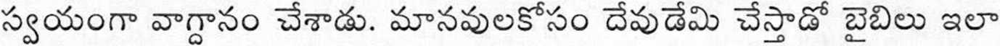xSsx^oft: ‘^o±)£ ^d 1°^ ap£i^a)o&)£)&) 6o 60^ efts So
SodraSoo sjd ^o66o, 6o^’SbSSo Sc^SSo ^6So3oSSo 60660, Q_ Q__ OJ Q—
■5oo6i3 S066000 68oOo^o3oSo.’—[SddoS 21:3, 4.
& Srdoeo Ss3^oSS>p6o ^66^006 Soe^o£)06orp ^odoooS6 a— oJ
68^0606! ^9000^ So6p, So dodooosoo -da ^p66
^DSgdoSo Sep S^odo ^So^S-So^
gSeo S’?p^pgg€ Sodo 6°dodo6oo6. So SgerSe?6 e>£gSoo$og - -
S^lPePeSA SSoS^-Da So§SqcfS§ ^So sjSS6o6osp>So. 0 oL oJ © ©L
o3oS^6apS’§S. Sb600 eJaDooSo esdo ^So^ScpSI iS^eodo
<*A Q_ Q <-
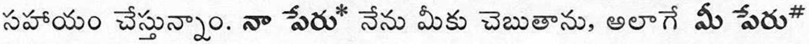dpcp ^eoSo^ScpSd s?S66o6oep>So. sjddoeoo dpep -da SoSdo CD oL
6&Sep gSgcpSI -ds SS^ ^Ss’S^ 6cdox3?o ?pdo s^cdoo6.
6Sgcpa^oo.A
A s?o&>'6^ eS* (www.watchtower.org) £b apSe^S £o§o5* 0D&36 £>&p •tpdo edg6o^)doofi).
4-r
Suamnvflawuflaj. usmmlNlawanniriiRDQn'u uamem A AJ
i v> 2/
n^wa^nuadn^L^viQn^Q^iOiJ^Qyilwvin. ^qeilvi^Q toitw
Q> q
O O <L7 Q> 2Z Z3D Z2J Z2J22X I6? Q> z^ ^7 I Z2J
Annn^anAfuaraawLN: 0n400nnMQ^00ltu^^0TO^L3JU0Qn^ Q> q qj
masjmfa, fn'wmna'unn, FmsjwDihEj, uaziiiiiAWfiTisj maliw?
‘iiuusu iirauataflultrifivna?’ fam itlultl A
Ipi! mssjsTsQ'im^wna^flvi^qvis'i'u/i'i'iivimJ'jsn'i^vi^gfqjqjn'j') wssa^w^ii'ifaazinMfiTjaji'iiuwjina^'ufafa^. mwl'ltiiCa aanQmiwm^m^mmaow^^u: “mswnasm'uwiiri A flnvm waflannsrraa'im FmxiKnaadjjfl^a'ltl n'TSRTKmaj q I Q>
u.ana^lwiia^m^wiJiJ'i^aa'iwwaan^a^JianLaa. mris
ivi?)fn"5fu#l^Saai^^^ii'uul^6;i'3^,wu'liJiia'3.”—qtscu 21:3, 4. A AJ
aa^nnjnn^n^w^sJif’mjjau^nifia^bLfjaaaamwanfl AJ
dnilmtl'usrh! i^fiajasLiuW^aan^-j'iiRfui.iasFiiiaiJfl^^^ A
^u^jjnuaunf’iwfl'wssm^tunjnH? Raja^'wijfin^aijWus'S'svi-Q> Q>
wMa ifiDQnumjn'flu luavkriaflwijvmi. mau^unviwSa
A
wii/Aoinia* Tjavminiaiia’Sfin! tfoa n^tmmviu^^ai>ajjuma A
asihMiwuauehufla'liJ. naufiajinn? A
A Pi^^^0Xi^maj^^<u/inynsjj0^fs)w'l^vi'i'30ULVi0^i>,ui?) <» AJ
nzTlAh fW Zh?-A AP« API lATtt zh£ WVt %”i# H£A HZ-fl Ah. Mt 1MV: VSaft HAi^t 7io°AAt S’°'5,V ’fi?” A'VA a'Wo°ifr HauWC W Afch»PV» AAH.: 41£ Av^A. HvF Trhth P°£Ali-:- JVAA'V a°h^'i iM T’M All H£HA- W) ffr H1C S^SATi^:
AtV£ £A: ‘7VT) Alt MaM ftfiAA £$■' A.Ah t^AH Mi a>-'>" Aa>: h.UaM H.T1AA A?! At 7hV ttfiAA flfV ASIA’S £7hZ zh^C °?H> VH. 7i7DH. HA<n>AA TriM h?° It^ttA -tcnXlU. 0>AV AA”« ar>^V ^A flHAfl At A^Afl 'iSS’Afl AH o^^A. H.711AA0?” »At “'i'flHA’ 'Vfl'Vt hfl ilS.CU hf -= ht
^°7S A? AT”: £?M £z9° t0^ Mh.’fiai-'Yi: &M S.XT cn-’i ^H'i: a)S ^L(D-^ia>-: cog, %(><$ ^iSh.TicD-'n AP” ^HA» -AA£ 21:3, 4
AH, ^At AH. Ttzn-fl hA? U^cot nAO mSS H,rhTA h?° HjiaM A*r ZhAfl AflAf*! AltlkV 11: 'iA^'i Afc^iVUrt M flHAO ao^h. M-lfttD tn>o^ "fijP AMllIlP ■fl'fi<n>£ Mth»> fflAA-’: V£H tn>AA. Aflt I^V A'VzhtT’ AH ^A Attf°Ch°A »rh.4-t HtZTlP MlAA Aji» ftrh-V
’ -4MC!as$ggW*ll||*gM^ jj MKWSBffff ^^'WWBgwn:
ZTtn li^X-AAh <£?£? AP»
AV VS Sir? 9°M1C AP» 1A0t tlA t^-A 'iTiC &M0 lav'/HP” A.V« n«n»j&* nv°7Ah AP: A7°*l" AaM fixAT 7'’£A7k: hAAt 9°Ki± TVHWP: A^Ti °7^ VH »3i¥t niAAS:: AHP AP H<n.A°?Vh::A
A AH <”>C(l'fl ^h(14t (www.watchtower.org) •flsf'tjf’Ti tfflAli. aitlit "fitzn-fl MAA ATju
‘Oku ou fiefia ‘aupito ke fe‘iloaki mo koe. Neongo ko koe mo au ‘oku ‘ikai te ta lea ‘i he lea tatau, ‘oku ‘ikai ha veiveiua ‘oku ta fakatou loto-tatau ko e mo‘uf ‘oku fonu palopalema. Ko ia al, ‘oku ou loto ke ‘eke atu kia koe ha fo‘i fehu‘i mahu‘inga: Te ke sai‘ia ke mo‘ui ‘1 ha taimi ‘a ia ‘oku ‘ikai ha taufehfa, faingata‘a, puke pea na‘a mo e mate?
Te ke fakakaukau nai: ‘Ko e mo‘oni, ka ‘e malava nai ia?’ ‘Io, ‘oku pehe! Ko e ‘Otua mafimafi-aoniu, ‘a Si-hova, kuo ne tala‘ofa ‘e ia tonu ‘e vave ni ke ne ‘omai ‘a e ngaahi tuunga ko ia. ‘Oku lea‘aki eni ‘e heTohiTapu fe-kau‘aki mo e me‘a ‘e fai ‘e he ‘Otua ma‘a e fa‘ahinga ‘o e tangata: “Te ne holoholo ‘a e lo‘imata kotoa pe mei honau mata; pea ‘e ‘ikai toe ai ha mate, pea ‘e ‘ikai toe ai ha ma-mahi, pe ha tangi, pe ha ongosia; kuo mole ‘a e ngaahi me‘a mu‘a.”—Fakaha 21:3, 4.
Faka‘uta atu a ki he fiefia ‘e hoko ki he mo‘ui
‘i he taimi ‘e fakahoko mo‘oni ai ‘a e ngaahi lea ko ia! Kae kehe, ‘e lava fefe ke ke fakapapau‘i te ke ma‘u mo ho fa-mili ‘a e tala‘ofa ni ‘i he kaha‘u? Te ke ma‘u ‘a e tali ‘i he ‘u tohi Fakatohitapu ‘oku mau pulusi. Te u fiefia ke ma‘u ha tohi ma‘£ u ‘i ho‘o lea tonu pea ‘oatu ia kiate koe.
Ko e taha au ‘o e Kau Fakamo‘oni ‘a Sihova. ‘Oku mau tokonfi ‘a e kakai ke nau mahino‘i ‘a e Tohi Tapu. Te u tala atu ‘a hoku hingoa* pea te u sai‘ia foki ke ‘ilo‘i ho hingoa#. Kataki ‘o toe ‘omai ‘a e ki‘i pepa ni kiate au koe-‘uhi ke toe lau foki ia ‘e he nfihi kehe. Malo ‘aupito?
A ‘I he ‘Initaneti (www.watchtower.org) te ke ma‘u ai ‘a e fakama-tala lahi ange ‘i ho‘o le£ tonu.
Kose Mochen Kopwe Alleaani Ei Poraus
Ua pwapwa le chuuruk ikenai. Inaamwo ika mi sokkofesen ach kewe fos nge, ese mwaal kopwe tipeeu pwe manauen aramas a fokkun ur ren osukosuk. Ina popun ua mochen eisinuk ei kapas eis mi lamot: En mi mochen manau Ion eu fansoun lupwen esap chu-en wor koput, riaffou, semmwen me malo?
Eli kopwe ekieki: ‘Wuu, nge epwe tongeni fis?’ Ewer, epwe fis! Ewe Kot mi Lapalap, Jiowa, a pwonei pwe ekiselo chok, a ina met epwe fori. lei met ewe Pai-pel a apasa ussun met Kot epwe fori fan iten aramas: “I epwe tolu seni meser chonun meser meinisin, o esap chuen wor malo, esap chuen wor kechiu, are ak-urang, are metek, pun ekkewe mettochun lorn ra fen morelo.”—Pwarata 21:3, 4.
Ekieki mwo ukuukun pwapwaan manauen aramas lupwen a fen pwonueta ekkena kapas! Iwe nge, met kopwe fori pwe en me atongom kewe repwe pwapwa-iti met epwe fis Ion mwach kkan? Ena kapas eis epwe polu Ion ekkewe puk me chassi ussun ewe Paipel am aua fori. Upwe pwapwa le wato fan itom eu puk are chassi Ion pwisin om fos.
Ngang emon Chon Pwarata Jiowa. Am aua alisi aramas ar repwe weweiti ewe Paipel. Upwe erenuk itei*, me ua pwal mochen silei itom#. Kose mochen upwe angeisefalli ewe puk pwe ekkewe ekkoch repwe pwal tongeni alleaani porausan. Kilisou chapur?
A Won Internet (www.watchtower.org) kopwe kuna pwal ekkoch poraus Ion om fos.
Sizinle kar§ila§tigima gok sevindim. Ayni dili konu-§amasak da, mutlaka ikimiz de bu hayatin sorunlarla dolu oldugunu du§unuyoruz. Bu nedenle size dnemli bir soru sormak istiyorum. Nefretin, sikintilann, has-taliklann ve hatta olumun bile olmadigi bir ortamda ya§amak istemez miydiniz?
“Elbette isterim, ama bu mumkun degil” diyebilirsi-niz. Aslmda mumkun. Mutlak Giice Sahip Tann Ye-hova, yakinda yerytiztine bu gibi ko§ullan getirecegini vaat ediyor. Tann’mn insanlik iQin yapacaklan konu-sunda Mukaddes Kitap §byle der: “Gozlerinden btitun gdzya§lanni silecek; ve artik olum olmiyacak; ve ar-tik matem ve aglayi§ ve aci da olmiyacak; gunku evel-ki §eyler gectiler.”— Vahiy 21:3, 4.
Bu sozler gergekle§tiginde diinyada ne kadar mut-lu bir hayat olacagim du§unun. Peki acaba, Tann’mn vaat ettigi bu ortamda sizin ve ailenizin de ya§amasi-m saglayabilir misiniz? Bunun cevabini Mukaddes Kitap temel ahnarak hazirlanmi§ yaymlanmizda bu-labilirsiniz. Isterseniz size kendi dilinizde boyle bir yaym getirmekten mutlu olurum.
Ben bir Yehova’nin §ahidiyim. Bizler insanlann Mukaddes Kitabi anlamalanna yardim ediyoruz. Size adimi* soyleyeyim. Sizin adimzi da# ogrenmek isterim. Liitfen ba§kalannm da okuyabilmesi igin bu ki-tapQigi bana geri verin. Qok te§ekktir ederim?
△ Kendi dilinizde daha gok bilgiyi internet iizerinden (www.watchtower.org) edinebilirsiniz.
£ye me anigye yiye se mahyia wo. 8wom se yenka kasa biako de, nanso akyinnye biara nni ho se wo ne me ye adwene se ohaw ahye asetra mu ma. Enti, mepe se mibisa wo asem bi a eho his: So wobepe se wotra ase wo bere bi a nitan, ahokyere, oyare, ne owu mpo nni ho mu?
Ebia wobeka wo wo tirim se: ‘Yiw, nanso so ebetu-mi aba saa?’ Yiw! Yehowa Nyankopon, Ade Nyinaa so Tumfoo no ankasa ahye bo se erenkye obema te-bea horow a ete saa no aba. Bible ka nea Onyanko-pon beye ama nnipa no ho asem se: “Obepopa won aniwam nusu nyinaa. Na owu nni ho bio, na awere-how ne osu ne eyaw bi nni ho bio, efise kan nneema no atwam.”—Adiyisem 21:3, 4.
Wo de susuw senea asetra beye anigye afa bere a saa asem yi nya mmamu no ho hwe! Nanso, den na wubetumi aye na ama wo ne w’abusua anya daakye a wohye ho bo yi bi? Wubehu mmuae no wo Bible ho nhoma a yetintim no i hwehwe nhoma a ewo wo
: : . ' ■■ .
lu. M’ani begye ho se me-kasa mu abre wo.
Meye Yehowa Dansefo. Yeboa nkurofo ma wote Bi
ble no ase. Mebo
e din* akyere wo, na mepe se wo
nso wobo wo din# kyere me. Mesre wo se fa nhoma-wa yi san ma me na ama afoforo nso akenkan bi. Meda wo ase pii.A
△ Wubenya nsem foforo pii wo wo kasa mu wo Intanet (www.watchtower.org) no so.
IIpoHHTaHTe, 6yfli> JiacKa, ijio iH(j)opMaijiio
flyTKe npneMHO Bac 3ycTpira. Xona mh po3MOBJiae-mo pi3HHMn MOBaMH, ajie, SesnepeHHO, noro/pKyeMO-ch, nip ctoro/jHiiiiHe tkhtth cnoBHene npogjieM. ToMy xony aanirraTn, hh damajin 6 bk tkhth y CBiTi, Re 6ijibme He 6y^e HenaBHcri, sjiH^HiB, xBopoS i na-BiTb CMepTi?
Bn, MaSyrt, /jyMaere: «3BHnaHHO, ajie hh n,e mojk-jihbo?» TaK, mojkjihbo! BceMoryTHiH Bor €roBa no-06111,516, m;o Hesa6apoM 3anpoBa^,HTb Ha 3eMJii TaKi yMOBH. Ocb hk Bi6jiia posnoBi/jae npo Te, mo Bin 3po6HTb ^jih Jiio/jen: «Bor KOTKHy cjibosy 3 ohch ix-Hix 3iTpe», i He 6yn,e btkc cMepTH. Ani CMyTKy, aHi KpHKy, aHi 6ojiio btkc He 6yzi;e, 60 nepme MHHyjiocH» (06’HBJieHHH 21:3, 4).
TijibKH yHBiTb co6i, HKe m^cjiHBe jkhtth HacTane, kojih 36yayTbCH m cjiOBa! Ane mo norpidno po6hth, a6n bh i Bama ciM’a Monin BTimaTHca tbkhm Man-6yTHiM? BmnoBmb Ha ije sanHTaHHH Moraa 3HaiiTH y 6i6jiiHHiii jiirepaiypi, HKy mh Bn^aeMo. MeHi 6yzje npHeMHo npHHecTH BaM ny6jiiKaniio Banioio moboio.
H CbI/jok €roBH i HaMaraiocb ^onoMorTH jiio^hm sposyMiTH Bi6jiiio. Mene 3bhtm*
a me 3BaTH Bac#? lIoBepHiTb Mem, 6yn,b JiacKa, 11,10 6pomypKy, mo6 h Mir ,n,aTH 11 noHnraTH mo Ihhihm juo/jhm. fly^Ke miKyioA.
△ B iHTepneTi (www.watchtower.org) mojkhs 3HaiiTH Guibme iH(J)opMaijn BarnoK) pvpioio moboio.
/r/i/i <V
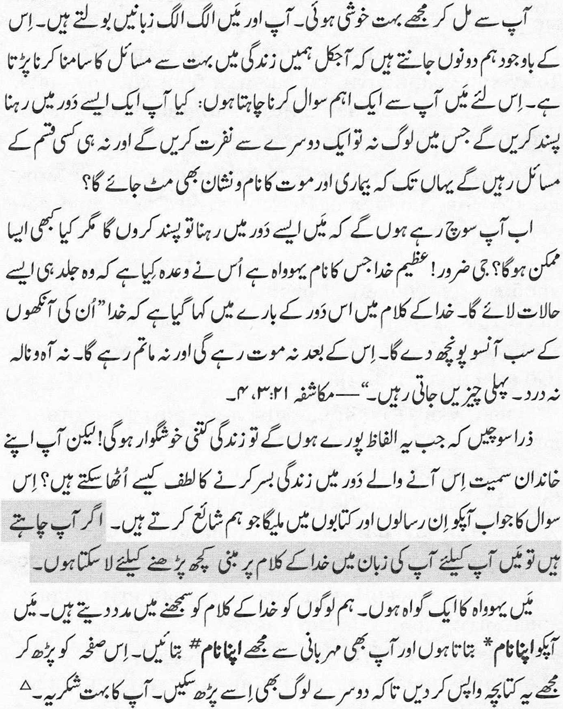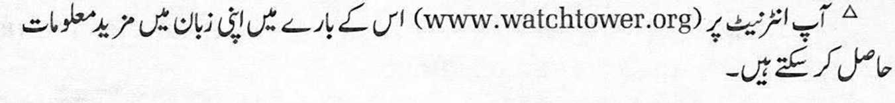MapjjaMaT, ^yiiHfflarH MaT»JiyMOTHH yifH6 HHIfHHr
Chshh ynpaTraHHM/jaH TKy^a xypcaH^MaH. Bns ^ap xhji THJi^a cy3JiamcaK-,a;a, ^aer MyaMMora ryna Reran (|)nKpnMn3 moc kcjihiiih MyMKHH. Illy caGaG/jan, mch cM3ra Gnp mj^hm caaoji GepMoi^HHMaH: ch3, a#o-Bar, eTHiiiMOBHHJinK, KacajiJinKJiap Ba ^arro yjiHM opTHi^ SyjiMan/jnraH Batfr/ja HmamHH xo^JiapMH^HHrHB?
Chs: «AjiGarra, jickhh GyHHHr hjiojkh GopMH?» — ,/jeG yMjiaraH,n;npcM3. Xa, Gop! Ky/xparjiH Xyzjo, He^oBa-hhhp Ysh mgrama Gyn/jan mapoHTJiapHH aparnniHU Bar»-/ja ^HJiMo^a. Myi^a/mac KhtoGah, Xyzjo hhcohhht ynyH HHMajiap i^hjimoi^hh aKawinrn ^ai^H^a aHTHJiram «Xy^o yjiapHHHr Kysn^ara xap Gnp cuihh aprnG ojiyp. Bh-jh yjiHM cnpa GyjiMac. XysyH ^aM, c^ape/i, $aM, orpni$ GyjiMac. Sepo aBBanrnjiap yraG KeT,zjii» (Ba^nn 21:3, 4).
By cysjiap aMajira omraHn/ja ^aeT Ha^aflap GaxTJin 6y-jinniMHn TacaBByp i^njinG KypnHr! Ammo, cm3 Ba on-jiaHrn3 Gy Ba^a i^njinHraH Kejia>KaK/ja aniam ynyH HHMa i$HJinmMHrn3 KepaK? TKaBoGnn, Gns Hamp 3TaeT-raH, Myi^aAzjac KHToGra acocjiaHraa aflaGHeTAaH tohh-niMHrH3 MyMKHH. Men Ga^KOHH^HJi GyH/jaH a^aGHeTHH CH3HHHF OHa THJIHHrH3^a TOHh6, CH3ra OJIHG KeJIMIHMM MyMKHH.
Men Ple^oBaHHHr UIo^H^HMaH. Bh3 HHCOHJiapra My-i^aAqac KhtoGhh lymyHHnuiapHra ep^aM GepaMH3. Men CH3ra y3HMHHHr hcmhmhh* aiiTaMaH, myHHHr^eK CH3-HHHr HCMHHFH3HH# $3M GHJIHmHH XO^Jiap 3/JMM. Hjl-thmoc, Gy pncojiaHH Goim^ajiap xhm vkhkih ynyn, Menra ^airrapnG GepHHr. Karra pa$Mar.A
△ Y3 THJiMHrn3/ja Kynpoi^ MaT>jiyMOTHM HHTepHeT/jaH (www.watchtower.org) Tonmniffirn3 MyMKHH.
Toi rat vui duuc gap ong/ba. Du tdi va ong/ba khong noi cung ngon ngu nhung chac chan chung ta deu cong nhan dcri song bay gid9 day day khd khan. Vi the toi xin duuc hdi mot cau hoi quan trong: Ong/Ba cd muon song trong the giod khong con ganh ghet, kho khan, benh tat va ngay cd su chet khong?
Cd Id ong/ba nghi: ‘Di nhien roi, nhung dieu dd cd the dup’c sao?’ Chae chan duuc! Chinh Gie-ho-va Duc Chua Trod toan nang hua Ngai se sd’m mang lai nhtrng dieu kien nhu the. Kinh Thanh noi ve nhung dieu Duc Chua Trod se lam cho nhan loai: “Ngai se lau rao het nuuc mat khdi mat chung, se khong cd su chet, cung khong cd than-khde, keu-ca, hay la dau-dom ntta; vi nhung su thu nhat da qua roi”.—Khai-huyen 21:3, 4.
Hay tuung tuung xem dod song se hanh phuc biet bao khi nhfrng lod nay thanh su that! Nhung lam sao ong/ba cd the chac chan minh va gia dinh se duuc huung vien ednh nay? Cau trd lod duuc tim thay trong an pham gidi thich Kinh Thanh cua chung toi. Toi sdn long tru lai va dem den mot an pham bang ngdn ngu cua dng/ba.
Toi la mot Nhan Chung Gie-ho-va. Chung toi giup moi nguod tim hieu Kinh Thanh. Toi xin giod thieu ten toi*, va cung mong ducrc biet ten dng/ba#. Cho toi xin lai sach mong nay de nguod khac cung duuc doc. Cam on ong/ba rat nhieu.A
△ Ong/Ba co the tim them thong tin bang ngon ngu cua minh tren mang Internet (www.watchtower.org).
Tey dama kontaan ndax li nu daje. Degg la bokku-nu lakk, waaye nun naar nepp xam nanu ne dund gi bare na coono lool. Moo tax ma begg la laaj lu am solo lii : Ndax begguloo dund ci jamano joo xam ne banante, Jafe-jafe, feebar ak dee dootul am ?
Xeyna yaa ngi wax ci sa xel ne : ‘ Nepp a begg loo-lu. Waaye ndax loolu men na nekk ? ’ Waawaaw, men na nekk kay. Yexowa, Yalla Aji Kattan ji, moom ci boppam moo nu dig ne, bu ci kanamee tuuti, dina fi dindi lepp lu mel noonu. Biibel bi dafay wone li Yalla di defal nit ni. Nee na : “ Dina fomp bepp ra-ngoon ci seeni bet; te dee dootul am walla naqar walla jooy walla mettit, ndaxte yef yu jekk ya wey nanu. ” — Peenu bi 21:3, 4.
Bes bu kaddu yooyu di nekk degg, dund gi dina neex lool. Boo beggee bokk yow ak sa njaboot ci loolu Yalla dige, lan nga war a def ? Boo Jangee teere yi nu defar te nuy wax ci li nekk ci Biibel bi, dinga am tontu laaj boobu. Boo beggee men naa la indil ay t6ere yi nu bind ci sa lakk.
Man, Seede Yexowa laa. Nun danuy dimbali nit ni ndax nu men a xam lu nekk ci Biibel bi. Dinaa la wax sama tur* yow itam nga wax ma sa tur#. Lee-gi nag, delloo ma teere bi ndax ma men koo won ne-neen. Jere-jef.A
△ Ci sunu adarees ci Internet (www.watchtower.org) dinga men a jang yeneen teere ci sa lakk.
Ndiyavuya ukukubona. Nakuba singathethi ulwimi olufanayo, ngokungathandabuzekiyo siyavumelana ukuba ubomi buzaliswe ziinkathazo. Kodwa ke, kukho umbuzo obalulekileyo endifuna ukukubuza wona: Nga-ba ungathanda ukuphila kwixesha elingasayi kuphi-nda libe nenzondo, ubunzima, ukugula kwanokufa?
Usenokuthi: ‘Kakade ndingathanda, kodwa ke nga-ba oko kunokwenzeka?’ Ewe, kunokwenzeka! UYehova uThixo ongusomandla nguye othembisileyo ukuba ku-ngekudala uza kubangela olo tshintsho. IBhayibhile ithi xa ithetha ngoko uThixo aza kukwenzela abantu: “Uya kuzisula zonke iinyembezi emehlweni abo, kunga-bi sabakho kufa, kungabi sabakho kuzila nakukhala nantlungu kwakhona. Izinto zangaphambili zidlule.” —ISityhilelo 21:3, 4.
Khawufan’ ucinge nje indlela ekuya kuba mnandi ngayo xa loo mazwi sele ezaliseka! Kodwa ke, unokuqi-niseka njani ukuba wena nentsapho yakho niya kuzi-nandipha ezi ngenelo zithenjisiweyo zekamva? Impe-ndulo uya kuyifumana kuncwadi esilupapashayo Iwe-Bhayibhile. Ndlya kukuvuyela ukukuphathela impapa-sho ngolwimi Iwakho.
Ndingomnye wamaNgqina kaYehova. Sinceda abantu ukuba baqonde IBhayibhile. Ndiza kukuxelela igama lam*, yaye ndingathanda nokwazi elakho igama#. Ndicela uyibuyisele kum le ncwadana ukuze nabanye bakwazi ukuyifunda. Ndibulela kakhulu?
△ Kwi-Internet (www.watchtower.org) uya kufumana inkcazelo engakumbi ngokuphathelele oku ngolwimi Iwakho.
Jowo Ka Ohun To Wa Nibi Yii o •
Inu mi dun gan-an lati ri o. Odtd ni pe a o jo gbo ede ara wa, amo 6 daju pe awa mejeeji gba pe isdro po ninu aye yii. Tori naa, je ki n bi o ni ibeere pata-ki kan: Se wa& fe gbe ninu aye kan ti ko ti ni si ikd-riira, inira, aisan ati iku paapaa?
Boya o le maa rd 6 lokan pe: ‘Ma£ fe gbe ninu iru aye bee o, amo se iru aye bee le wa ni?’ Bee ni, d maa wa! Jehofa, Qlorun Olodumare funra re Id seleri pe dun maa to mu iru aye bee wa. Ohun ti Bibeli so nipa nhkan ti Qlorun maa se fun araye niyi: “[Qlorun] yoo . . . nu omije gbogbo nil kuro ni oju won, iku ki yoo si si mo, bee ni ki yoo si ofo tabi igbe ekun tabi irora mo. Awon ohun atijo ti koja lo.”—Isf-paya 21:3, 4.
Wo bi aye yii a se dun to nigba ti oro yii ba se! Amo, ki ni iwo ati idile re le se lati wa nibe nigba ti ileri ojo ola yii ba se Iddoto? Waa ri idahun si ibeere yii ninu awon iwe ta a te jade to salaye Bibeli. Maa ba o wa iwe kan ta a te ni ede re ki n si mu un wa • • • fun q. '! 'Hi?:; ij'; W-
Mo je okan lara awon Elerii Jehofa. A maa h ran awon eeyan lowo ki won le loye Bibeli. Maa so oru-ko mi* fun o, maa si fe ki iwo naa so oruko re# fun • • ' •• • ••
mi. Jowo da iwe yii pada fun mi ki elomiran naa le ri i ka. O seun mo dupe o.A
△ Lon fntaneeti (www.watchtower.org) wa& ri isofunni pupo si i ni ede re.
Ngijabula kakhulu ukukubona. Yize mina nawe singa-khulumi ulimi olulodwa, angingabazi ukuthi sobabili si-yavuma ukuthi ukuphila kugcwele izinkinga. Ngakho-ke ngifisa ukukubuza umbuzo obalulekile: Ungathanda yini ukuphila ngesikhathi okuyobe kungasekho ngaso inzondo, ubunzima, ukugula ngisho nokufa?
Ungase ucabange: ‘Ngingathanda, kodwa kungenze-ka yini lokho?’ Yebo kungenzeka! UNkulunkulu umni-nimandla onke, uJehova, nguye uqobo osithembise ukuthi ngokushesha uzoletha izimo ezinjalo. IBhayibheli li-sho lokhu mayelana nalokho uNkulunkulu azokwenzela isintu: “Uyosula zonke izinyembezi emehlweni abo, uku-fa ngeke kusaba khona, noma ukulila noma ukukhala noma ubuhlungu ngeke kusaba khona. Izinto zanga-phambili zidlulile.”—IsAmbulo 21:3, 4.
Awucabange nje ukuthi ukuphila kuyoba mnandi ka-njani lapho lawo mazwi egcwaliseka! Kodwa-ke, unga-qiniseka kanjani ukuthi wena nomkhaya wakho niyali-thola leli kusasa elithenjisiwe? Impendulo uzoyithola ezincwadini zeBhayibheli esizinyathelisayo. Ngingajabu-la ukukutholela incwadi ngolimi Iwakho ngikulethele yona.
Ngingomunye woFakazi BakaJehova. Sisiza abantu baqonde iBhayibheli. Ngizokutshela igama lami*, nawe ngicela ungitshele igama lakho#. Ngicela ungibuyisele le ncwajana ukuze nabanye bayifunde. Ngiyabonga kakhulu?
A Engosini ye-Internet (www.watchtower.org) uyothola okwe-ngeziwe okubhalwe ngolimi Iwakho.